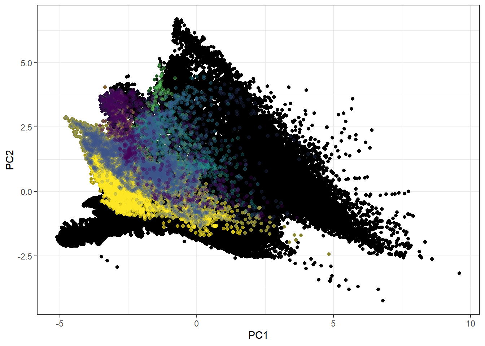
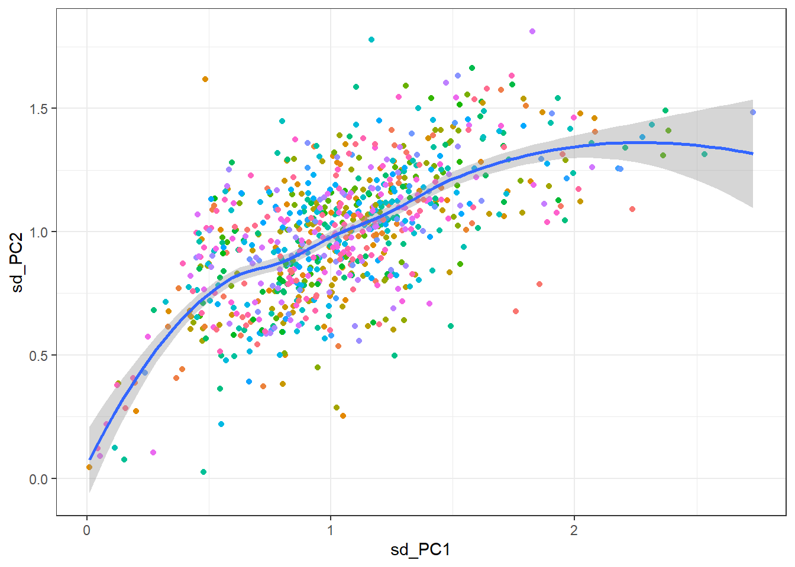

rm(list=ls())
gc() used (Mb) gc trigger (Mb) max used (Mb)
Ncells 572936 30.6 1307960 69.9 658000 35.2
Vcells 1047335 8.0 8388608 64.0 1768422 13.5rm(list=ls())
gc() used (Mb) gc trigger (Mb) max used (Mb)
Ncells 572936 30.6 1307960 69.9 658000 35.2
Vcells 1047335 8.0 8388608 64.0 1768422 13.5library(sf); sf_use_s2(FALSE)Linking to GEOS 3.11.2, GDAL 3.7.2, PROJ 9.3.0; sf_use_s2() is TRUESpherical geometry (s2) switched offlibrary(terra)terra 1.7.71library(dplyr)
Attaching package: 'dplyr'The following objects are masked from 'package:terra':
intersect, unionThe following objects are masked from 'package:stats':
filter, lagThe following objects are masked from 'package:base':
intersect, setdiff, setequal, unionlibrary(ggplot2)
library(ggfortify)
pacman::p_load(rasterSp, climateNiche) # require dependencies to be installed (see GitHub of these packages)source_Git <- c("c:/Users/wolke/OneDrive - CZU v Praze/Dokumenty/GitHub/BEAST_General_Procedures/Project_Frieda/StaticPredictors/")
out_path <- c(paste0(source_Git, "out/"))
source_predictors <- c("c:/Users/wolke/OneDrive - CZU v Praze/Dokumenty/PhD_Projects/StaticPredictors/Data/")
CHELSA_path <- paste0(source_predictors, "Chelsa_Bio_PET/")
# List all the .tif files in the directory
tif_files <- list.files(path=CHELSA_path, pattern = ".tif$")
# The input file geodatabase from BirdLife International 2018
fgdb <-"c:/Users/wolke/OneDrive - CZU v Praze/Datasets/Raw/Distributions/Birds_of_the_world/BOTW.gdb" # Taxonomic data from BirdLife international
Tax <- st_read(fgdb, layer = "Taxonomic_checklist") %>%
dplyr::select(Order_, FamilyName, ScientificName, RL_Category, Synonyms) %>%
rename("Order" = "Order_") %>%
mutate(Order = stringr::str_to_sentence(Order))Reading layer `Taxonomic_checklist' from data source
`C:\Users\wolke\OneDrive - CZU v Praze\Datasets\Raw\Distributions\Birds_of_the_world\BOTW.gdb'
using driver `OpenFileGDB'Warning: no simple feature geometries present: returning a data.frame or tbl_dfTax[Tax == "<NA>"] = NA
# Atlas species names
spData <- read.csv("../../out/csv/SpeciesNamesData.csv") %>% pull(verbatim_name) # Reduce Taxonomic data from BirdLife 2018 to Species Names columns
Tax_red <- Tax %>%
distinct(ScientificName, Synonyms) %>%
rename("AtlasSp" = "ScientificName")
Tax_red$TaxID <- seq(1:nrow(Tax_red))
head(Tax_red) AtlasSp Synonyms TaxID
1 Rhea americana <NA> 1
2 Rhea pennata <NA> 2
3 Casuarius casuarius <NA> 3
4 Casuarius bennetti <NA> 4
5 Casuarius unappendiculatus <NA> 5
6 Dromaius novaehollandiae <NA> 6# Quick Matches
sp_direct_match <- intersect(spData, Tax_red$AtlasSp) # 733
sp_syn_match <- intersect(spData, Tax_red$Synonyms) # 72
# Create Dataframe that will be filled for taxonomic matching
Atlas_sp <- data.frame(
AtlasSp = spData,
AtlasID = seq(1:length(spData)),
match_type = NA,
match = NA
) %>%
group_by(AtlasSp) %>%
mutate(
match_type = case_when(
AtlasSp %in% sp_direct_match ~ "direct",
AtlasSp %in% sp_syn_match ~ "synonym",
.default = NA
)
)
# =================================== Step 1: Direct Matches ===================================== #
Atlas_merged <- left_join(Atlas_sp, Tax_red %>% filter(AtlasSp %in% sp_direct_match)) %>%
group_by(AtlasSp) %>%
mutate(
match = case_when(is.na(TaxID) ~ 0, !is.na(TaxID) ~ 1),
AtlasSp_new = case_when(match == 1 ~ AtlasSp, match == 0 ~ ""),
ScientificName = case_when(match == 0 ~ NA, match == 1 ~ AtlasSp)
)Joining with `by = join_by(AtlasSp)`Atlas_merged %>% filter(AtlasSp_new == "") %>% ungroup() %>% distinct(match_type)# A tibble: 2 × 1
match_type
<chr>
1 synonym
2 <NA> Atlas_merged %>%
filter(match == 1) %>%
n_distinct() # 733 species with matching taxonomy. We can delete them from the matching process now[1] 733# Checks:
spData_unmmatched <- Atlas_merged %>%
filter(match == 0) %>%
pull(AtlasSp) # 108 species still missing
sp_matched <- Atlas_merged %>%
filter(match == 1) %>%
pull(AtlasSp)
syn_match <- intersect(spData_unmmatched, sp_syn_match) # of those 108, 67 species can be matched directly from the synonyms species
intersect(sp_syn_match, sp_matched) # 5 Species were matched but are also found in the synonyms column.[1] "Luscinia svecica" "Cuculus optatus" "Buteo rufinus"
[4] "Cuculus saturatus" "Melanitta fusca" Atlas_merged %>% filter(AtlasSp %in% intersect(sp_syn_match, sp_matched))# A tibble: 5 × 8
# Groups: AtlasSp [5]
AtlasSp AtlasID match_type match Synonyms TaxID AtlasSp_new ScientificName
<chr> <int> <chr> <dbl> <chr> <int> <chr> <chr>
1 Luscinia s… 115 direct 1 Luscini… 5744 Luscinia s… Luscinia svec…
2 Cuculus op… 441 direct 1 Cuculus… 9406 Cuculus op… Cuculus optat…
3 Buteo rufi… 595 direct 1 <NA> 9635 Buteo rufi… Buteo rufinus
4 Cuculus sa… 637 direct 1 Cuculus… 9405 Cuculus sa… Cuculus satur…
5 Melanitta … 721 direct 1 Melanit… 8460 Melanitta … Melanitta fus…# =================================== Step 2: Direct Synonyms =========================================== #
Atlas_synonyms <- Atlas_merged %>%
select(AtlasID, AtlasSp, match_type, match) %>%
filter(AtlasSp %in% syn_match)
Atlas_synonyms$Synonyms <- Atlas_synonyms$AtlasSp
Atlas_synonyms_merged <- left_join(Atlas_synonyms, Tax_red %>% filter(Synonyms %in% syn_match) %>% rename("ScientificName" = "AtlasSp")) %>%
mutate(
AtlasSp_new = ScientificName,
match = 1
)Joining with `by = join_by(Synonyms)`head(Atlas_synonyms_merged)# A tibble: 6 × 8
# Groups: AtlasSp [6]
AtlasID AtlasSp match_type match Synonyms ScientificName TaxID AtlasSp_new
<int> <chr> <chr> <dbl> <chr> <chr> <int> <chr>
1 13 Anas clype… synonym 1 Anas cl… Spatula clype… 406 Spatula cl…
2 16 Anas querq… synonym 1 Anas qu… Spatula querq… 416 Spatula qu…
3 17 Anas strep… synonym 1 Anas st… Mareca strepe… 386 Mareca str…
4 24 Aquila pom… synonym 1 Aquila … Clanga pomari… 3076 Clanga pom…
5 42 Carduelis … synonym 1 Carduel… Acanthis flam… 8483 Acanthis f…
6 43 Carduelis … synonym 1 Carduel… Spinus spinus 7571 Spinus spi…head(Atlas_merged)# A tibble: 6 × 8
# Groups: AtlasSp [6]
AtlasSp AtlasID match_type match Synonyms TaxID AtlasSp_new ScientificName
<chr> <int> <chr> <dbl> <chr> <int> <chr> <chr>
1 Accipiter … 1 direct 1 <NA> 3022 Accipiter … Accipiter gen…
2 Accipiter … 2 direct 1 <NA> 3015 Accipiter … Accipiter nis…
3 Acrocephal… 3 direct 1 <NA> 11005 Acrocephal… Acrocephalus …
4 Acrocephal… 4 direct 1 <NA> 6584 Acrocephal… Acrocephalus …
5 Acrocephal… 5 direct 1 <NA> 6577 Acrocephal… Acrocephalus …
6 Acrocephal… 6 direct 1 <NA> 6582 Acrocephal… Acrocephalus …colSums(is.na(Atlas_synonyms_merged)) AtlasID AtlasSp match_type match Synonyms
0 0 0 0 0
ScientificName TaxID AtlasSp_new
0 0 0 Atlas_synonyms_merged %>% filter(ScientificName == "")# A tibble: 0 × 8
# Groups: AtlasSp [0]
# ℹ 8 variables: AtlasID <int>, AtlasSp <chr>, match_type <chr>, match <dbl>,
# Synonyms <chr>, ScientificName <chr>, TaxID <int>, AtlasSp_new <chr>Atlas_merged2 <- rbind(Atlas_merged %>% filter(!(AtlasSp %in% syn_match)), Atlas_synonyms_merged)
# Delete species from vector that have been matched already:
spData_unmmatched2 <- Atlas_merged2 %>%
filter(is.na(TaxID)) %>%
pull(AtlasSp)
Atlas_merged3 <- Atlas_merged2 %>%
group_by(AtlasSp) %>%
mutate(
match_type =
case_when(
(AtlasSp %in% spData_unmmatched2) ~ "manually",
.default = match_type
)
)
## Note: There is a script that can do a partial match on the concatenated strings in the original Synonyms column. Not needed here, but just in case.
# =================================== Step 3: Manual Matching =========================================== #
# Lets continue with manual matching of names: (Note: Updated names were retrieved from Wikipedia on 21.04.2024)
unmatched <- Atlas_merged3 %>% filter(match_type == "manually")
unmatched$AtlasSp_new <- gsub("Sylvia", "Curruca", unmatched$AtlasSp)
unmatched$AtlasSp_new <- gsub("Carduelis cannabina", "Linaria cannabina", unmatched$AtlasSp_new)
unmatched$AtlasSp_new <- gsub("Carduelis chloris", "Chloris chloris", unmatched$AtlasSp_new)
unmatched$AtlasSp_new <- gsub("Linaria chloris", "Chloris chloris", unmatched$AtlasSp_new)
unmatched$AtlasSp_new <- gsub("Locustella pryeri", "Helopsaltes pryeri", unmatched$AtlasSp_new)
unmatched$AtlasSp_new <- gsub("Cyanecula svecica", "Luscinia svecica", unmatched$AtlasSp_new)
unmatched$AtlasSp_new <- gsub("Passer rutilans", "Passer cinnamomeus", unmatched$AtlasSp_new)
unmatched$AtlasSp_new <- gsub("Luscinia akahige", "Larvivora akahige", unmatched$AtlasSp_new)
unmatched$AtlasSp_new <- gsub("Gallirallus okinawae", "Hypotaenidia okinawae", unmatched$AtlasSp_new)
unmatched$AtlasSp_new <- gsub("Luscinia komadori", "Larvivora komadori", unmatched$AtlasSp_new)
unmatched$AtlasSp_new <- gsub("Hirundo daurica", "Cecropis daurica", unmatched$AtlasSp_new)
unmatched$AtlasSp_new <- gsub("Poecile varius", "Sittiparus varius", unmatched$AtlasSp_new)
unmatched$AtlasSp_new <- gsub("Sterna albifrons", "Sternula albifrons", unmatched$AtlasSp_new)
unmatched$AtlasSp_new <- gsub("Egretta intermedia", "Ardea intermedia", unmatched$AtlasSp_new)
unmatched$AtlasSp_new <- gsub("Ammodramus maritimus", "Ammospiza maritima", unmatched$AtlasSp_new)
unmatched$AtlasSp_new <- gsub("Falcipennis canadensis", "Canachites canadensis", unmatched$AtlasSp_new)
unmatched$AtlasSp_new <- gsub("Regulus calendula", "Corthylio calendula", unmatched$AtlasSp_new)
unmatched$AtlasSp_new <- gsub("Oporornis formosus", "Geothlypis formosa", unmatched$AtlasSp_new)
unmatched$AtlasSp_new <- gsub("Bonasa bonasia", "Tetrastes bonasia", unmatched$AtlasSp_new)
unmatched$AtlasSp_new <- gsub("Regulus ignicapillus", "Regulus ignicapilla", unmatched$AtlasSp_new)
unmatched$AtlasSp_new <- gsub("Parus caeruleus", "Cyanistes caeruleus", unmatched$AtlasSp_new)
unmatched$AtlasSp_new <- gsub("Miliaria calandra", "Emberiza calandra", unmatched$AtlasSp_new)
unmatched$AtlasSp_new <- gsub("Delichon urbica", "Delichon urbicum", unmatched$AtlasSp_new)
unmatched$AtlasSp_new <- gsub("Oporornis philadelphia", "Geothlypis philadelphia", unmatched$AtlasSp_new)
unmatched$AtlasSp_new <- gsub("Seiurus noveboracensis", "Parkesia noveboracensis", unmatched$AtlasSp_new)
unmatched$AtlasSp_new <- gsub("Coccothraustes vespertinus", "Hesperiphona vespertina", unmatched$AtlasSp_new)
unmatched$AtlasSp_new <- gsub("Hydropogne caspia", "Hydroprogne caspia", unmatched$AtlasSp_new)
## Back to Step 1: Direct match:
unmatched$ScientificName <- unmatched$AtlasSp_new
unmatched$TaxID <- NULL
unmatched$Synonyms <- NULL
setdiff(unmatched$ScientificName, Tax_red$AtlasSp) # Matched all but 2 species which are new. Great ![1] "Picoides dorsalis" "Parus minor" unmatched_merged <- left_join(unmatched, Tax_red %>% rename("ScientificName" = "AtlasSp"))Joining with `by = join_by(ScientificName)`unmatched_merged$match <- 1
## Merge to final table:
Atlas_merged4 <- rbind(Atlas_merged3 %>% filter(match_type != "manually"), unmatched_merged) %>%
group_by(AtlasSp) %>%
mutate()
Atlas_merged4 %>% filter(match_type == "manually")# A tibble: 41 × 8
# Groups: AtlasSp [41]
AtlasSp AtlasID match_type match Synonyms TaxID AtlasSp_new ScientificName
<chr> <int> <chr> <dbl> <chr> <int> <chr> <chr>
1 Bonasa bo… 33 manually 1 <NA> 263 Tetrastes … Tetrastes bon…
2 Carduelis… 39 manually 1 Acanthi… 7591 Linaria ca… Linaria canna…
3 Carduelis… 41 manually 1 Chloris… 7566 Chloris ch… Chloris chlor…
4 Delichon … 68 manually 1 <NA> 10602 Delichon u… Delichon urbi…
5 Miliaria … 118 manually 1 Emberiz… 7708 Emberiza c… Emberiza cala…
6 Parus cae… 134 manually 1 <NA> 10352 Cyanistes … Cyanistes cae…
7 Regulus i… 166 manually 1 <NA> 9427 Regulus ig… Regulus ignic…
8 Sylvia co… 183 manually 1 <NA> 6963 Curruca co… Curruca commu…
9 Sylvia cu… 184 manually 1 Sylvia … 9425 Curruca cu… Curruca curru…
10 Sylvia ni… 185 manually 1 <NA> 6964 Curruca ni… Curruca nisor…
# ℹ 31 more rows## Data Checks:
colSums(is.na(Atlas_merged4)) AtlasSp AtlasID match_type match Synonyms
0 0 0 0 645
TaxID AtlasSp_new ScientificName
2 0 0 intersect(spData, Atlas_merged4$AtlasSp) [1] "Accipiter gentilis" "Accipiter nisus"
[3] "Acrocephalus arundinaceus" "Acrocephalus palustris"
[5] "Acrocephalus schoenobaenus" "Acrocephalus scirpaceus"
[7] "Actitis hypoleucos" "Aegithalos caudatus"
[9] "Aegolius funereus" "Alauda arvensis"
[11] "Alcedo atthis" "Anas acuta"
[13] "Anas clypeata" "Anas crecca"
[15] "Anas platyrhynchos" "Anas querquedula"
[17] "Anas strepera" "Anser anser"
[19] "Anthus campestris" "Anthus pratensis"
[21] "Anthus spinoletta" "Anthus trivialis"
[23] "Apus apus" "Aquila pomarina"
[25] "Ardea cinerea" "Ardea purpurea"
[27] "Asio flammeus" "Asio otus"
[29] "Athene noctua" "Aythya ferina"
[31] "Aythya fuligula" "Aythya nyroca"
[33] "Bonasa bonasia" "Botaurus stellaris"
[35] "Bubo bubo" "Bucephala clangula"
[37] "Buteo buteo" "Caprimulgus europaeus"
[39] "Carduelis cannabina" "Carduelis carduelis"
[41] "Carduelis chloris" "Carduelis flammea"
[43] "Carduelis spinus" "Carpodacus erythrinus"
[45] "Certhia brachydactyla" "Certhia familiaris"
[47] "Charadrius dubius" "Charadrius morinellus"
[49] "Chlidonias niger" "Ciconia ciconia"
[51] "Ciconia nigra" "Cinclus cinclus"
[53] "Circus aeruginosus" "Circus cyaneus"
[55] "Circus pygargus" "Coccothraustes coccothraustes"
[57] "Columba livia" "Columba oenas"
[59] "Columba palumbus" "Corvus corax"
[61] "Corvus corone" "Corvus frugilegus"
[63] "Corvus monedula" "Coturnix coturnix"
[65] "Crex crex" "Cuculus canorus"
[67] "Cygnus olor" "Delichon urbica"
[69] "Dendrocopos leucotos" "Dendrocopos major"
[71] "Dendrocopos medius" "Dendrocopos minor"
[73] "Dendrocopos syriacus" "Dryocopus martius"
[75] "Egretta garzetta" "Emberiza citrinella"
[77] "Emberiza hortulana" "Emberiza schoeniclus"
[79] "Erithacus rubecula" "Falco cherrug"
[81] "Falco peregrinus" "Falco subbuteo"
[83] "Falco tinnunculus" "Ficedula albicollis"
[85] "Ficedula hypoleuca" "Ficedula parva"
[87] "Fringilla coelebs" "Fulica atra"
[89] "Galerida cristata" "Gallinago gallinago"
[91] "Gallinula chloropus" "Garrulus glandarius"
[93] "Glaucidium passerinum" "Grus grus"
[95] "Haliaeetus albicilla" "Himantopus himantopus"
[97] "Hippolais icterina" "Hirundo rustica"
[99] "Ixobrychus minutus" "Jynx torquilla"
[101] "Lanius collurio" "Lanius excubitor"
[103] "Larus cachinnans" "Larus canus"
[105] "Larus melanocephalus" "Larus ridibundus"
[107] "Limosa limosa" "Locustella fluviatilis"
[109] "Locustella luscinioides" "Locustella naevia"
[111] "Loxia curvirostra" "Lullula arborea"
[113] "Luscinia luscinia" "Luscinia megarhynchos"
[115] "Luscinia svecica" "Mergus merganser"
[117] "Merops apiaster" "Miliaria calandra"
[119] "Milvus migrans" "Milvus milvus"
[121] "Motacilla alba" "Motacilla cinerea"
[123] "Motacilla flava" "Muscicapa striata"
[125] "Netta rufina" "Nucifraga caryocatactes"
[127] "Numenius arquata" "Nycticorax nycticorax"
[129] "Oenanthe oenanthe" "Oriolus oriolus"
[131] "Otus scops" "Panurus biarmicus"
[133] "Parus ater" "Parus caeruleus"
[135] "Parus cristatus" "Parus major"
[137] "Parus montanus" "Parus palustris"
[139] "Passer domesticus" "Passer montanus"
[141] "Perdix perdix" "Pernis apivorus"
[143] "Phalacrocorax carbo" "Phasianus colchicus"
[145] "Phoenicurus ochruros" "Phoenicurus phoenicurus"
[147] "Phylloscopus collybita" "Phylloscopus sibilatrix"
[149] "Phylloscopus trochiloides" "Phylloscopus trochilus"
[151] "Pica pica" "Picoides tridactylus"
[153] "Picus canus" "Picus viridis"
[155] "Platalea leucorodia" "Podiceps cristatus"
[157] "Podiceps grisegena" "Podiceps nigricollis"
[159] "Porzana parva" "Porzana porzana"
[161] "Prunella collaris" "Prunella modularis"
[163] "Pyrrhula pyrrhula" "Rallus aquaticus"
[165] "Recurvirostra avosetta" "Regulus ignicapillus"
[167] "Regulus regulus" "Remiz pendulinus"
[169] "Riparia riparia" "Saxicola rubetra"
[171] "Saxicola torquata" "Scolopax rusticola"
[173] "Serinus serinus" "Sitta europaea"
[175] "Sterna hirundo" "Streptopelia decaocto"
[177] "Streptopelia turtur" "Strix aluco"
[179] "Strix uralensis" "Sturnus vulgaris"
[181] "Sylvia atricapilla" "Sylvia borin"
[183] "Sylvia communis" "Sylvia curruca"
[185] "Sylvia nisoria" "Tachybaptus ruficollis"
[187] "Tetrao tetrix" "Tetrao urogallus"
[189] "Tringa ochropus" "Tringa totanus"
[191] "Troglodytes troglodytes" "Turdus iliacus"
[193] "Turdus merula" "Turdus philomelos"
[195] "Turdus pilaris" "Turdus torquatus"
[197] "Turdus viscivorus" "Tyto alba"
[199] "Upupa epops" "Vanellus vanellus"
[201] "Accipiter cooperii" "Accipiter striatus"
[203] "Actitis macularius" "Aegolius acadicus"
[205] "Agelaius phoeniceus" "Aix sponsa"
[207] "Ammodramus caudacutus" "Ammodramus henslowii"
[209] "Ammodramus maritimus" "Ammodramus savannarum"
[211] "Anas americana" "Anas discors"
[213] "Anas rubripes" "Aquila chrysaetos"
[215] "Archilochus colubris" "Ardea alba"
[217] "Ardea herodias" "Aythya affinis"
[219] "Aythya americana" "Aythya collaris"
[221] "Aythya valisineria" "Baeolophus bicolor"
[223] "Bartramia longicauda" "Bombycilla cedrorum"
[225] "Bonasa umbellus" "Botaurus lentiginosus"
[227] "Branta canadensis" "Bubo virginianus"
[229] "Bubulcus ibis" "Buteo jamaicensis"
[231] "Buteo lineatus" "Buteo platypterus"
[233] "Butorides virescens" "Caprimulgus carolinensis"
[235] "Caprimulgus vociferus" "Cardinalis cardinalis"
[237] "Carpodacus mexicanus" "Carpodacus purpureus"
[239] "Cathartes aura" "Catharus bicknelli"
[241] "Catharus fuscescens" "Catharus guttatus"
[243] "Catharus ustulatus" "Certhia americana"
[245] "Chaetura pelagica" "Charadrius melodus"
[247] "Charadrius vociferus" "Chordeiles minor"
[249] "Cistothorus palustris" "Cistothorus platensis"
[251] "Coccothraustes vespertinus" "Coccyzus americanus"
[253] "Coccyzus erythropthalmus" "Colaptes auratus"
[255] "Colinus virginianus" "Contopus cooperi"
[257] "Contopus virens" "Corvus brachyrhynchos"
[259] "Corvus ossifragus" "Cyanocitta cristata"
[261] "Dendroica caerulescens" "Dendroica castanea"
[263] "Dendroica cerulea" "Dendroica coronata"
[265] "Dendroica discolor" "Dendroica dominica"
[267] "Dendroica fusca" "Dendroica magnolia"
[269] "Dendroica palmarum" "Dendroica pensylvanica"
[271] "Dendroica petechia" "Dendroica pinus"
[273] "Dendroica striata" "Dendroica tigrina"
[275] "Dendroica virens" "Dolichonyx oryzivorus"
[277] "Dryocopus pileatus" "Dumetella carolinensis"
[279] "Egretta caerulea" "Egretta thula"
[281] "Egretta tricolor" "Empidonax alnorum"
[283] "Empidonax flaviventris" "Empidonax minimus"
[285] "Empidonax traillii" "Empidonax virescens"
[287] "Eremophila alpestris" "Euphagus carolinus"
[289] "Falcipennis canadensis" "Falco sparverius"
[291] "Fulica americana" "Gallinago delicata"
[293] "Gavia immer" "Gelochelidon nilotica"
[295] "Geothlypis trichas" "Haematopus palliatus"
[297] "Haliaeetus leucocephalus" "Helmitheros vermivorum"
[299] "Hydropogne caspia" "Hylocichla mustelina"
[301] "Icteria virens" "Icterus galbula"
[303] "Icterus spurius" "Ixobrychus exilis"
[305] "Junco hyemalis" "Lanius ludovicianus"
[307] "Larus argentatus" "Larus delawarensis"
[309] "Larus marinus" "Laterallus jamaicensis"
[311] "Leucophaeus atricilla" "Lophodytes cucullatus"
[313] "Loxia leucoptera" "Megaceryle alcyon"
[315] "Megascops asio" "Melanerpes carolinus"
[317] "Melanerpes erythrocephalus" "Meleagris gallopavo"
[319] "Melospiza georgiana" "Melospiza lincolnii"
[321] "Melospiza melodia" "Mergus serrator"
[323] "Mimus polyglottos" "Mniotilta varia"
[325] "Molothrus ater" "Myiarchus crinitus"
[327] "Myiopsitta monachus" "Nyctanassa violacea"
[329] "Oporornis formosus" "Oporornis philadelphia"
[331] "Oxyura jamaicensis" "Pandion haliaetus"
[333] "Parula americana" "Passerculus sandwichensis"
[335] "Passerina caerulea" "Passerina cyanea"
[337] "Perisoreus canadensis" "Petrochelidon pyrrhonota"
[339] "Phalacrocorax auritus" "Pheucticus ludovicianus"
[341] "Picoides arcticus" "Picoides dorsalis"
[343] "Picoides pubescens" "Picoides villosus"
[345] "Pipilo erythrophthalmus" "Piranga olivacea"
[347] "Piranga rubra" "Plegadis falcinellus"
[349] "Podilymbus podiceps" "Poecile atricapillus"
[351] "Poecile hudsonicus" "Polioptila caerulea"
[353] "Pooecetes gramineus" "Porzana carolina"
[355] "Progne subis" "Protonotaria citrea"
[357] "Quiscalus major" "Quiscalus quiscula"
[359] "Rallus elegans" "Rallus limicola"
[361] "Rallus longirostris" "Regulus calendula"
[363] "Regulus satrapa" "Rynchops niger"
[365] "Sayornis phoebe" "Scolopax minor"
[367] "Seiurus aurocapilla" "Seiurus motacilla"
[369] "Seiurus noveboracensis" "Setophaga ruticilla"
[371] "Sialia sialis" "Sitta canadensis"
[373] "Sitta carolinensis" "Sphyrapicus varius"
[375] "Spinus pinus" "Spinus tristis"
[377] "Spiza americana" "Spizella pallida"
[379] "Spizella passerina" "Spizella pusilla"
[381] "Stelgidopteryx serripennis" "Sterna dougallii"
[383] "Sterna forsteri" "Sternula antillarum"
[385] "Strix varia" "Sturnella magna"
[387] "Sturnella neglecta" "Tachycineta bicolor"
[389] "Thryothorus ludovicianus" "Toxostoma rufum"
[391] "Tringa semipalmata" "Troglodytes aedon"
[393] "Turdus migratorius" "Tyrannus tyrannus"
[395] "Vermivora chrysoptera" "Vermivora peregrina"
[397] "Vermivora pinus" "Vermivora ruficapilla"
[399] "Vireo flavifrons" "Vireo gilvus"
[401] "Vireo griseus" "Vireo olivaceus"
[403] "Vireo philadelphicus" "Vireo solitarius"
[405] "Wilsonia canadensis" "Wilsonia citrina"
[407] "Wilsonia pusilla" "Zenaida macroura"
[409] "Zonotrichia albicollis" "Accipiter gularis"
[411] "Acrocephalus bistrigiceps" "Acrocephalus orientalis"
[413] "Agropsar philippensis" "Aix galericulata"
[415] "Amaurornis phoenicurus" "Anas falcata"
[417] "Anas zonorhyncha" "Anous stolidus"
[419] "Anthus hodgsoni" "Apalopteron familiare"
[421] "Apus nipalensis" "Apus pacificus"
[423] "Bambusicola thoracicus" "Butastur indicus"
[425] "Butorides striata" "Calonectris leucomelas"
[427] "Caprimulgus indicus" "Cepphus carbo"
[429] "Cerorhinca monocerata" "Cettia diphone"
[431] "Chalcophaps indica" "Charadrius alexandrinus"
[433] "Charadrius placidus" "Chloris sinica"
[435] "Cinclus pallasii" "Circus spilonotus"
[437] "Cisticola juncidis" "Columba janthina"
[439] "Corvus macrorhynchos" "Cuculus micropterus"
[441] "Cuculus optatus" "Cuculus poliocephalus"
[443] "Cyanopica cyanus" "Cyanoptila cyanomelana"
[445] "Delichon dasypus" "Dendrocopos kizuki"
[447] "Egretta intermedia" "Egretta sacra"
[449] "Emberiza cioides" "Emberiza fucata"
[451] "Emberiza spodocephala" "Emberiza sulphurata"
[453] "Emberiza variabilis" "Emberiza yessoensis"
[455] "Eophona personata" "Eurystomus orientalis"
[457] "Ficedula narcissina" "Gallinago hardwickii"
[459] "Gallirallus okinawae" "Garrulax canorus"
[461] "Garrulus lidthi" "Glareola maldivarum"
[463] "Gorsachius goisagi" "Grus japonensis"
[465] "Halcyon coromanda" "Hierococcyx hyperythrus"
[467] "Hirundapus caudacutus" "Hirundo daurica"
[469] "Hirundo tahitica" "Histrionicus histrionicus"
[471] "Hypsipetes amaurotis" "Ixobrychus cinnamomeus"
[473] "Ixobrychus sinensis" "Lagopus muta"
[475] "Lanius bucephalus" "Lanius cristatus"
[477] "Lanius tigrinus" "Larus crassirostris"
[479] "Larus schistisagus" "Leiothrix lutea"
[481] "Locustella fasciolata" "Locustella lanceolata"
[483] "Locustella ochotensis" "Locustella pleskei"
[485] "Locustella pryeri" "Lonchura punctulata"
[487] "Luscinia akahige" "Luscinia calliope"
[489] "Luscinia cyane" "Luscinia komadori"
[491] "Megaceryle lugubris" "Monticola solitarius"
[493] "Motacilla grandis" "Muscicapa dauurica"
[495] "Muscicapa sibirica" "Ninox scutulata"
[497] "Nisaetus nipalensis" "Otus elegans"
[499] "Otus lempiji" "Otus sunia"
[501] "Parus minor" "Passer rutilans"
[503] "Pericrocotus divaricatus" "Periparus ater"
[505] "Pernis ptilorhynchus" "Phalacrocorax capillatus"
[507] "Phalacrocorax pelagicus" "Phoenicurus auroreus"
[509] "Phylloscopus borealoides" "Phylloscopus coronatus"
[511] "Phylloscopus ijimae" "Phylloscopus xanthodryas"
[513] "Picus awokera" "Pinicola enucleator"
[515] "Pitta nympha" "Poecile montanus"
[517] "Poecile palustris" "Poecile varius"
[519] "Porzana fusca" "Prunella rubida"
[521] "Pycnonotus sinensis" "Rallina eurizonoides"
[523] "Rostratula benghalensis" "Sapheopipo noguchii"
[525] "Saxicola torquatus" "Spilornis cheela"
[527] "Spodiopsar cineraceus" "Sterna albifrons"
[529] "Sterna sumatrana" "Streptopelia orientalis"
[531] "Sula leucogaster" "Syrmaticus soemmerringii"
[533] "Tarsiger cyanurus" "Terpsiphone atrocaudata"
[535] "Tetrastes bonasia" "Treron formosae"
[537] "Treron sieboldii" "Turdus cardis"
[539] "Turdus celaenops" "Turdus chrysolaus"
[541] "Turdus pallidus" "Turnix suscitator"
[543] "Uragus sibiricus" "Urosphena squameiceps"
[545] "Vanellus cinereus" "Zoothera dauma"
[547] "Zoothera sibirica" "Zosterops japonicus"
[549] "Acanthis flammea" "Accipiter brevipes"
[551] "Acridotheres cristatellus" "Acrocephalus agricola"
[553] "Acrocephalus dumetorum" "Acrocephalus melanopogon"
[555] "Acrocephalus paludicola" "Aegypius monachus"
[557] "Alauda leucoptera" "Alaudala rufescens"
[559] "Alca torda" "Alectoris barbara"
[561] "Alectoris chukar" "Alectoris graeca"
[563] "Alectoris rufa" "Alle alle"
[565] "Alopochen aegyptiaca" "Amandava amandava"
[567] "Anser albifrons" "Anser brachyrhynchus"
[569] "Anser erythropus" "Anser fabalis"
[571] "Anthropoides virgo" "Anthus berthelotii"
[573] "Anthus cervinus" "Anthus petrosus"
[575] "Apus caffer" "Apus pallidus"
[577] "Apus unicolor" "Aquila adalberti"
[579] "Aquila fasciata" "Aquila heliaca"
[581] "Aquila nipalensis" "Ardeola ralloides"
[583] "Arenaria interpres" "Aythya marila"
[585] "Bombycilla garrulus" "Branta bernicla"
[587] "Branta leucopsis" "Bubo scandiacus"
[589] "Bucanetes githagineus" "Bucanetes mongolicus"
[591] "Bucephala islandica" "Bulweria bulwerii"
[593] "Burhinus oedicnemus" "Buteo lagopus"
[595] "Buteo rufinus" "Calandrella brachydactyla"
[597] "Calcarius lapponicus" "Calidris alba"
[599] "Calidris alpina" "Calidris canutus"
[601] "Calidris falcinellus" "Calidris maritima"
[603] "Calidris melanotos" "Calidris minuta"
[605] "Calidris pugnax" "Calidris temminckii"
[607] "Calliope calliope" "Callipepla californica"
[609] "Calonectris borealis" "Calonectris diomedea"
[611] "Caprimulgus ruficollis" "Carduelis citrinella"
[613] "Carduelis corsicana" "Carpodacus rubicilla"
[615] "Catharacta skua" "Cecropis daurica"
[617] "Cepphus grylle" "Cercotrichas galactotes"
[619] "Cettia cetti" "Charadrius asiaticus"
[621] "Charadrius hiaticula" "Charadrius leschenaultii"
[623] "Chersophilus duponti" "Chlidonias hybrida"
[625] "Chlidonias leucopterus" "Chloris chloris"
[627] "Chrysolophus amherstiae" "Chrysolophus pictus"
[629] "Circaetus gallicus" "Circus macrourus"
[631] "Clamator glandarius" "Clanga clanga"
[633] "Clanga pomarina" "Clangula hyemalis"
[635] "Columba trocaz" "Coracias garrulus"
[637] "Cuculus saturatus" "Cyanecula svecica"
[639] "Cyanistes caeruleus" "Cyanistes cyanus"
[641] "Cyanistes teneriffae" "Cyanopica cooki"
[643] "Cygnus columbianus" "Cygnus cygnus"
[645] "Delichon urbicum" "Dryobates minor"
[647] "Elanus caeruleus" "Emberiza aureola"
[649] "Emberiza bruniceps" "Emberiza caesia"
[651] "Emberiza calandra" "Emberiza cia"
[653] "Emberiza cineracea" "Emberiza cirlus"
[655] "Emberiza melanocephala" "Emberiza pallasi"
[657] "Emberiza pusilla" "Emberiza rustica"
[659] "Estrilda astrild" "Estrilda melpoda"
[661] "Eudromias morinellus" "Falco biarmicus"
[663] "Falco columbarius" "Falco eleonorae"
[665] "Falco naumanni" "Falco rusticolus"
[667] "Falco vespertinus" "Ficedula semitorquata"
[669] "Francolinus francolinus" "Fratercula arctica"
[671] "Fringilla montifringilla" "Fulica cristata"
[673] "Fulmarus glacialis" "Galerida theklae"
[675] "Gallinago media" "Gallinago stenura"
[677] "Gavia arctica" "Gavia stellata"
[679] "Glareola nordmanni" "Glareola pratincola"
[681] "Gulosus aristotelis" "Gypaetus barbatus"
[683] "Gyps fulvus" "Haematopus ostralegus"
[685] "Hieraaetus pennatus" "Hippolais olivetorum"
[687] "Hippolais polyglotta" "Hydrobates castro"
[689] "Hydrobates leucorhous" "Hydrobates pelagicus"
[691] "Hydrocoloeus minutus" "Hydroprogne caspia"
[693] "Iduna caligata" "Iduna opaca"
[695] "Iduna pallida" "Lagopus lagopus"
[697] "Lanius meridionalis" "Lanius minor"
[699] "Lanius nubicus" "Lanius senator"
[701] "Larus armenicus" "Larus audouinii"
[703] "Larus fuscus" "Larus genei"
[705] "Larus hyperboreus" "Larus ichthyaetus"
[707] "Larus michahellis" "Leiopicus medius"
[709] "Limosa lapponica" "Linaria cannabina"
[711] "Linaria flavirostris" "Lophophanes cristatus"
[713] "Loxia pytyopsittacus" "Loxia scotica"
[715] "Lymnocryptes minimus" "Lyrurus mlokosiewiczi"
[717] "Lyrurus tetrix" "Mareca penelope"
[719] "Mareca strepera" "Marmaronetta angustirostris"
[721] "Melanitta fusca" "Melanitta nigra"
[723] "Melanocorypha calandra" "Mergellus albellus"
[725] "Merops persicus" "Microcarbo pygmaeus"
[727] "Monticola saxatilis" "Montifringilla nivalis"
[729] "Morus bassanus" "Motacilla citreola"
[731] "Neophron percnopterus" "Numenius phaeopus"
[733] "Oenanthe deserti" "Oenanthe finschii"
[735] "Oenanthe hispanica" "Oenanthe isabellina"
[737] "Oenanthe leucura" "Oenanthe pleschanka"
[739] "Onychoprion fuscatus" "Otis tarda"
[741] "Oxyura leucocephala" "Pagophila eburnea"
[743] "Passer hispaniolensis" "Passer italiae"
[745] "Pastor roseus" "Pelagodroma marina"
[747] "Pelecanus crispus" "Pelecanus onocrotalus"
[749] "Perisoreus infaustus" "Petronia petronia"
[751] "Phalaropus fulicarius" "Phalaropus lobatus"
[753] "Phoenicopterus roseus" "Phylloscopus bonelli"
[755] "Phylloscopus borealis" "Phylloscopus ibericus"
[757] "Phylloscopus inornatus" "Phylloscopus nitidus"
[759] "Phylloscopus orientalis" "Phylloscopus sindianus"
[761] "Picus sharpei" "Plectrophenax nivalis"
[763] "Pluvialis apricaria" "Pluvialis squatarola"
[765] "Podiceps auritus" "Poecile cinctus"
[767] "Poecile lugubris" "Polysticta stelleri"
[769] "Porphyrio porphyrio" "Prunella atrogularis"
[771] "Prunella montanella" "Psittacula krameri"
[773] "Pterocles alchata" "Pterocles orientalis"
[775] "Pterodroma deserta" "Pterodroma madeira"
[777] "Ptyonoprogne rupestris" "Puffinus lherminieri"
[779] "Puffinus mauretanicus" "Puffinus puffinus"
[781] "Puffinus yelkouan" "Pyrrhocorax graculus"
[783] "Pyrrhocorax pyrrhocorax" "Pyrrhula murina"
[785] "Regulus ignicapilla" "Regulus madeirensis"
[787] "Rissa tridactyla" "Serinus canaria"
[789] "Serinus pusillus" "Sitta krueperi"
[791] "Sitta neumayer" "Sitta whiteheadi"
[793] "Somateria mollissima" "Somateria spectabilis"
[795] "Spatula clypeata" "Spatula querquedula"
[797] "Spilopelia senegalensis" "Spinus spinus"
[799] "Stercorarius longicaudus" "Stercorarius parasiticus"
[801] "Stercorarius pomarinus" "Sterna paradisaea"
[803] "Sternula albifrons" "Strix nebulosa"
[805] "Sturnus unicolor" "Surnia ulula"
[807] "Sylvia balearica" "Sylvia cantillans"
[809] "Sylvia conspicillata" "Sylvia crassirostris"
[811] "Sylvia hortensis" "Sylvia melanocephala"
[813] "Sylvia mystacea" "Sylvia ruppeli"
[815] "Sylvia sarda" "Sylvia subalpina"
[817] "Sylvia undata" "Syrmaticus reevesii"
[819] "Tachymarptis melba" "Tadorna ferruginea"
[821] "Tadorna tadorna" "Tetraogallus caspius"
[823] "Tetraogallus caucasicus" "Tetrax tetrax"
[825] "Thalasseus sandvicensis" "Tichodroma muraria"
[827] "Tringa erythropus" "Tringa glareola"
[829] "Tringa nebularia" "Tringa stagnatilis"
[831] "Turdus atrogularis" "Uria aalge"
[833] "Uria lomvia" "Vanellus gregarius"
[835] "Vanellus leucurus" "Vanellus spinosus"
[837] "Xema sabini" "Xenus cinereus"
[839] "Zapornia parva" "Zapornia pusilla"
[841] "Zoothera aurea" unique(Atlas_merged4$ScientificName) [1] "Accipiter gentilis" "Accipiter nisus"
[3] "Acrocephalus arundinaceus" "Acrocephalus palustris"
[5] "Acrocephalus schoenobaenus" "Acrocephalus scirpaceus"
[7] "Actitis hypoleucos" "Aegithalos caudatus"
[9] "Aegolius funereus" "Alauda arvensis"
[11] "Alcedo atthis" "Anas acuta"
[13] "Anas crecca" "Anas platyrhynchos"
[15] "Anser anser" "Anthus campestris"
[17] "Anthus pratensis" "Anthus spinoletta"
[19] "Anthus trivialis" "Apus apus"
[21] "Ardea cinerea" "Ardea purpurea"
[23] "Asio flammeus" "Asio otus"
[25] "Athene noctua" "Aythya ferina"
[27] "Aythya fuligula" "Aythya nyroca"
[29] "Botaurus stellaris" "Bubo bubo"
[31] "Bucephala clangula" "Buteo buteo"
[33] "Caprimulgus europaeus" "Carduelis carduelis"
[35] "Carpodacus erythrinus" "Certhia brachydactyla"
[37] "Certhia familiaris" "Charadrius dubius"
[39] "Chlidonias niger" "Ciconia ciconia"
[41] "Ciconia nigra" "Cinclus cinclus"
[43] "Circus aeruginosus" "Circus cyaneus"
[45] "Circus pygargus" "Coccothraustes coccothraustes"
[47] "Columba livia" "Columba oenas"
[49] "Columba palumbus" "Corvus corax"
[51] "Corvus corone" "Corvus frugilegus"
[53] "Corvus monedula" "Coturnix coturnix"
[55] "Crex crex" "Cuculus canorus"
[57] "Cygnus olor" "Dendrocopos leucotos"
[59] "Dendrocopos major" "Dendrocopos syriacus"
[61] "Dryocopus martius" "Egretta garzetta"
[63] "Emberiza citrinella" "Emberiza hortulana"
[65] "Emberiza schoeniclus" "Erithacus rubecula"
[67] "Falco cherrug" "Falco peregrinus"
[69] "Falco subbuteo" "Falco tinnunculus"
[71] "Ficedula albicollis" "Ficedula hypoleuca"
[73] "Ficedula parva" "Fringilla coelebs"
[75] "Fulica atra" "Galerida cristata"
[77] "Gallinago gallinago" "Gallinula chloropus"
[79] "Garrulus glandarius" "Glaucidium passerinum"
[81] "Grus grus" "Haliaeetus albicilla"
[83] "Himantopus himantopus" "Hippolais icterina"
[85] "Hirundo rustica" "Ixobrychus minutus"
[87] "Jynx torquilla" "Lanius collurio"
[89] "Lanius excubitor" "Larus cachinnans"
[91] "Larus canus" "Larus melanocephalus"
[93] "Larus ridibundus" "Limosa limosa"
[95] "Locustella fluviatilis" "Locustella luscinioides"
[97] "Locustella naevia" "Loxia curvirostra"
[99] "Lullula arborea" "Luscinia luscinia"
[101] "Luscinia megarhynchos" "Luscinia svecica"
[103] "Mergus merganser" "Merops apiaster"
[105] "Milvus migrans" "Milvus milvus"
[107] "Motacilla alba" "Motacilla cinerea"
[109] "Motacilla flava" "Muscicapa striata"
[111] "Netta rufina" "Nucifraga caryocatactes"
[113] "Numenius arquata" "Nycticorax nycticorax"
[115] "Oenanthe oenanthe" "Oriolus oriolus"
[117] "Otus scops" "Panurus biarmicus"
[119] "Parus major" "Passer domesticus"
[121] "Passer montanus" "Perdix perdix"
[123] "Pernis apivorus" "Phalacrocorax carbo"
[125] "Phasianus colchicus" "Phoenicurus ochruros"
[127] "Phoenicurus phoenicurus" "Phylloscopus collybita"
[129] "Phylloscopus sibilatrix" "Phylloscopus trochiloides"
[131] "Phylloscopus trochilus" "Pica pica"
[133] "Picoides tridactylus" "Picus canus"
[135] "Picus viridis" "Platalea leucorodia"
[137] "Podiceps cristatus" "Podiceps grisegena"
[139] "Podiceps nigricollis" "Porzana porzana"
[141] "Prunella collaris" "Prunella modularis"
[143] "Pyrrhula pyrrhula" "Rallus aquaticus"
[145] "Recurvirostra avosetta" "Regulus regulus"
[147] "Remiz pendulinus" "Riparia riparia"
[149] "Saxicola rubetra" "Scolopax rusticola"
[151] "Serinus serinus" "Sitta europaea"
[153] "Sterna hirundo" "Streptopelia decaocto"
[155] "Streptopelia turtur" "Strix aluco"
[157] "Strix uralensis" "Sturnus vulgaris"
[159] "Sylvia atricapilla" "Sylvia borin"
[161] "Tachybaptus ruficollis" "Tetrao urogallus"
[163] "Tringa ochropus" "Tringa totanus"
[165] "Troglodytes troglodytes" "Turdus iliacus"
[167] "Turdus merula" "Turdus philomelos"
[169] "Turdus pilaris" "Turdus torquatus"
[171] "Turdus viscivorus" "Tyto alba"
[173] "Upupa epops" "Vanellus vanellus"
[175] "Accipiter cooperii" "Accipiter striatus"
[177] "Actitis macularius" "Aegolius acadicus"
[179] "Agelaius phoeniceus" "Aix sponsa"
[181] "Ammodramus savannarum" "Anas rubripes"
[183] "Aquila chrysaetos" "Archilochus colubris"
[185] "Ardea alba" "Ardea herodias"
[187] "Aythya affinis" "Aythya americana"
[189] "Aythya collaris" "Aythya valisineria"
[191] "Baeolophus bicolor" "Bartramia longicauda"
[193] "Bombycilla cedrorum" "Bonasa umbellus"
[195] "Botaurus lentiginosus" "Branta canadensis"
[197] "Bubo virginianus" "Bubulcus ibis"
[199] "Buteo jamaicensis" "Buteo lineatus"
[201] "Buteo platypterus" "Cardinalis cardinalis"
[203] "Cathartes aura" "Catharus bicknelli"
[205] "Catharus fuscescens" "Catharus guttatus"
[207] "Catharus ustulatus" "Certhia americana"
[209] "Chaetura pelagica" "Charadrius melodus"
[211] "Charadrius vociferus" "Chordeiles minor"
[213] "Cistothorus palustris" "Cistothorus platensis"
[215] "Coccyzus americanus" "Coccyzus erythropthalmus"
[217] "Colaptes auratus" "Colinus virginianus"
[219] "Contopus cooperi" "Contopus virens"
[221] "Corvus brachyrhynchos" "Corvus ossifragus"
[223] "Cyanocitta cristata" "Dolichonyx oryzivorus"
[225] "Dumetella carolinensis" "Egretta caerulea"
[227] "Egretta thula" "Egretta tricolor"
[229] "Empidonax alnorum" "Empidonax flaviventris"
[231] "Empidonax minimus" "Empidonax traillii"
[233] "Empidonax virescens" "Eremophila alpestris"
[235] "Euphagus carolinus" "Falco sparverius"
[237] "Fulica americana" "Gallinago delicata"
[239] "Gavia immer" "Gelochelidon nilotica"
[241] "Geothlypis trichas" "Haematopus palliatus"
[243] "Haliaeetus leucocephalus" "Helmitheros vermivorum"
[245] "Hylocichla mustelina" "Icteria virens"
[247] "Icterus galbula" "Icterus spurius"
[249] "Ixobrychus exilis" "Junco hyemalis"
[251] "Lanius ludovicianus" "Larus argentatus"
[253] "Larus delawarensis" "Larus marinus"
[255] "Laterallus jamaicensis" "Lophodytes cucullatus"
[257] "Loxia leucoptera" "Megaceryle alcyon"
[259] "Megascops asio" "Melanerpes carolinus"
[261] "Melanerpes erythrocephalus" "Meleagris gallopavo"
[263] "Melospiza georgiana" "Melospiza lincolnii"
[265] "Melospiza melodia" "Mergus serrator"
[267] "Mimus polyglottos" "Mniotilta varia"
[269] "Molothrus ater" "Myiarchus crinitus"
[271] "Myiopsitta monachus" "Nyctanassa violacea"
[273] "Oxyura jamaicensis" "Pandion haliaetus"
[275] "Passerculus sandwichensis" "Passerina caerulea"
[277] "Passerina cyanea" "Perisoreus canadensis"
[279] "Petrochelidon pyrrhonota" "Pheucticus ludovicianus"
[281] "Picoides arcticus" "Pipilo erythrophthalmus"
[283] "Piranga olivacea" "Piranga rubra"
[285] "Plegadis falcinellus" "Podilymbus podiceps"
[287] "Poecile atricapillus" "Poecile hudsonicus"
[289] "Polioptila caerulea" "Pooecetes gramineus"
[291] "Porzana carolina" "Progne subis"
[293] "Protonotaria citrea" "Quiscalus major"
[295] "Quiscalus quiscula" "Rallus elegans"
[297] "Rallus limicola" "Rallus longirostris"
[299] "Regulus satrapa" "Rynchops niger"
[301] "Sayornis phoebe" "Scolopax minor"
[303] "Seiurus aurocapilla" "Setophaga ruticilla"
[305] "Sialia sialis" "Sitta canadensis"
[307] "Sitta carolinensis" "Sphyrapicus varius"
[309] "Spinus pinus" "Spinus tristis"
[311] "Spiza americana" "Spizella pallida"
[313] "Spizella passerina" "Spizella pusilla"
[315] "Stelgidopteryx serripennis" "Sterna dougallii"
[317] "Sterna forsteri" "Sternula antillarum"
[319] "Strix varia" "Sturnella magna"
[321] "Sturnella neglecta" "Tachycineta bicolor"
[323] "Thryothorus ludovicianus" "Toxostoma rufum"
[325] "Tringa semipalmata" "Troglodytes aedon"
[327] "Turdus migratorius" "Tyrannus tyrannus"
[329] "Vermivora chrysoptera" "Vireo flavifrons"
[331] "Vireo gilvus" "Vireo griseus"
[333] "Vireo olivaceus" "Vireo philadelphicus"
[335] "Vireo solitarius" "Zenaida macroura"
[337] "Zonotrichia albicollis" "Accipiter gularis"
[339] "Acrocephalus bistrigiceps" "Acrocephalus orientalis"
[341] "Agropsar philippensis" "Aix galericulata"
[343] "Amaurornis phoenicurus" "Anas zonorhyncha"
[345] "Anous stolidus" "Anthus hodgsoni"
[347] "Apalopteron familiare" "Apus nipalensis"
[349] "Apus pacificus" "Bambusicola thoracicus"
[351] "Butastur indicus" "Butorides striata"
[353] "Calonectris leucomelas" "Caprimulgus indicus"
[355] "Cepphus carbo" "Cerorhinca monocerata"
[357] "Chalcophaps indica" "Charadrius alexandrinus"
[359] "Charadrius placidus" "Chloris sinica"
[361] "Cinclus pallasii" "Circus spilonotus"
[363] "Cisticola juncidis" "Columba janthina"
[365] "Corvus macrorhynchos" "Cuculus micropterus"
[367] "Cuculus optatus" "Cuculus poliocephalus"
[369] "Cyanopica cyanus" "Cyanoptila cyanomelana"
[371] "Delichon dasypus" "Egretta sacra"
[373] "Emberiza cioides" "Emberiza fucata"
[375] "Emberiza spodocephala" "Emberiza sulphurata"
[377] "Emberiza variabilis" "Emberiza yessoensis"
[379] "Eophona personata" "Eurystomus orientalis"
[381] "Ficedula narcissina" "Gallinago hardwickii"
[383] "Garrulax canorus" "Garrulus lidthi"
[385] "Glareola maldivarum" "Gorsachius goisagi"
[387] "Grus japonensis" "Halcyon coromanda"
[389] "Hierococcyx hyperythrus" "Hirundapus caudacutus"
[391] "Hirundo tahitica" "Histrionicus histrionicus"
[393] "Hypsipetes amaurotis" "Ixobrychus cinnamomeus"
[395] "Ixobrychus sinensis" "Lagopus muta"
[397] "Lanius bucephalus" "Lanius cristatus"
[399] "Lanius tigrinus" "Larus crassirostris"
[401] "Larus schistisagus" "Leiothrix lutea"
[403] "Locustella lanceolata" "Lonchura punctulata"
[405] "Megaceryle lugubris" "Monticola solitarius"
[407] "Motacilla grandis" "Muscicapa dauurica"
[409] "Muscicapa sibirica" "Ninox scutulata"
[411] "Nisaetus nipalensis" "Otus elegans"
[413] "Otus lempiji" "Otus sunia"
[415] "Pericrocotus divaricatus" "Periparus ater"
[417] "Pernis ptilorhynchus" "Phalacrocorax capillatus"
[419] "Phoenicurus auroreus" "Phylloscopus borealoides"
[421] "Phylloscopus coronatus" "Phylloscopus ijimae"
[423] "Phylloscopus xanthodryas" "Picus awokera"
[425] "Pinicola enucleator" "Pitta nympha"
[427] "Poecile montanus" "Poecile palustris"
[429] "Prunella rubida" "Pycnonotus sinensis"
[431] "Rallina eurizonoides" "Rostratula benghalensis"
[433] "Saxicola torquatus" "Spilornis cheela"
[435] "Spodiopsar cineraceus" "Sterna sumatrana"
[437] "Streptopelia orientalis" "Sula leucogaster"
[439] "Syrmaticus soemmerringii" "Tarsiger cyanurus"
[441] "Terpsiphone atrocaudata" "Tetrastes bonasia"
[443] "Treron formosae" "Treron sieboldii"
[445] "Turdus cardis" "Turdus celaenops"
[447] "Turdus chrysolaus" "Turdus pallidus"
[449] "Turnix suscitator" "Urosphena squameiceps"
[451] "Vanellus cinereus" "Zoothera dauma"
[453] "Zosterops japonicus" "Acanthis flammea"
[455] "Accipiter brevipes" "Acridotheres cristatellus"
[457] "Acrocephalus agricola" "Acrocephalus dumetorum"
[459] "Acrocephalus melanopogon" "Acrocephalus paludicola"
[461] "Aegypius monachus" "Alauda leucoptera"
[463] "Alaudala rufescens" "Alca torda"
[465] "Alectoris barbara" "Alectoris chukar"
[467] "Alectoris graeca" "Alectoris rufa"
[469] "Alle alle" "Alopochen aegyptiaca"
[471] "Amandava amandava" "Anser albifrons"
[473] "Anser brachyrhynchus" "Anser erythropus"
[475] "Anser fabalis" "Anthropoides virgo"
[477] "Anthus berthelotii" "Anthus cervinus"
[479] "Anthus petrosus" "Apus caffer"
[481] "Apus pallidus" "Apus unicolor"
[483] "Aquila adalberti" "Aquila fasciata"
[485] "Aquila heliaca" "Aquila nipalensis"
[487] "Ardeola ralloides" "Arenaria interpres"
[489] "Aythya marila" "Bombycilla garrulus"
[491] "Branta bernicla" "Branta leucopsis"
[493] "Bubo scandiacus" "Bucanetes githagineus"
[495] "Bucanetes mongolicus" "Bucephala islandica"
[497] "Bulweria bulwerii" "Burhinus oedicnemus"
[499] "Buteo lagopus" "Buteo rufinus"
[501] "Calandrella brachydactyla" "Calcarius lapponicus"
[503] "Calidris alba" "Calidris alpina"
[505] "Calidris canutus" "Calidris falcinellus"
[507] "Calidris maritima" "Calidris melanotos"
[509] "Calidris minuta" "Calidris pugnax"
[511] "Calidris temminckii" "Calliope calliope"
[513] "Callipepla californica" "Calonectris borealis"
[515] "Calonectris diomedea" "Caprimulgus ruficollis"
[517] "Carduelis citrinella" "Carduelis corsicana"
[519] "Carpodacus rubicilla" "Catharacta skua"
[521] "Cecropis daurica" "Cepphus grylle"
[523] "Cercotrichas galactotes" "Cettia cetti"
[525] "Charadrius asiaticus" "Charadrius hiaticula"
[527] "Charadrius leschenaultii" "Chersophilus duponti"
[529] "Chlidonias hybrida" "Chlidonias leucopterus"
[531] "Chloris chloris" "Chrysolophus amherstiae"
[533] "Chrysolophus pictus" "Circaetus gallicus"
[535] "Circus macrourus" "Clamator glandarius"
[537] "Clanga clanga" "Clanga pomarina"
[539] "Clangula hyemalis" "Columba trocaz"
[541] "Coracias garrulus" "Cuculus saturatus"
[543] "Cyanistes caeruleus" "Cyanistes cyanus"
[545] "Cyanistes teneriffae" "Cyanopica cooki"
[547] "Cygnus columbianus" "Cygnus cygnus"
[549] "Delichon urbicum" "Dryobates minor"
[551] "Elanus caeruleus" "Emberiza aureola"
[553] "Emberiza bruniceps" "Emberiza caesia"
[555] "Emberiza calandra" "Emberiza cia"
[557] "Emberiza cineracea" "Emberiza cirlus"
[559] "Emberiza melanocephala" "Emberiza pallasi"
[561] "Emberiza pusilla" "Emberiza rustica"
[563] "Estrilda astrild" "Estrilda melpoda"
[565] "Eudromias morinellus" "Falco biarmicus"
[567] "Falco columbarius" "Falco eleonorae"
[569] "Falco naumanni" "Falco rusticolus"
[571] "Falco vespertinus" "Ficedula semitorquata"
[573] "Francolinus francolinus" "Fratercula arctica"
[575] "Fringilla montifringilla" "Fulica cristata"
[577] "Fulmarus glacialis" "Galerida theklae"
[579] "Gallinago media" "Gallinago stenura"
[581] "Gavia arctica" "Gavia stellata"
[583] "Glareola nordmanni" "Glareola pratincola"
[585] "Gulosus aristotelis" "Gypaetus barbatus"
[587] "Gyps fulvus" "Haematopus ostralegus"
[589] "Hieraaetus pennatus" "Hippolais olivetorum"
[591] "Hippolais polyglotta" "Hydrobates castro"
[593] "Hydrobates leucorhous" "Hydrobates pelagicus"
[595] "Hydrocoloeus minutus" "Hydroprogne caspia"
[597] "Iduna caligata" "Iduna opaca"
[599] "Iduna pallida" "Lagopus lagopus"
[601] "Lanius meridionalis" "Lanius minor"
[603] "Lanius nubicus" "Lanius senator"
[605] "Larus armenicus" "Larus audouinii"
[607] "Larus fuscus" "Larus genei"
[609] "Larus hyperboreus" "Larus ichthyaetus"
[611] "Larus michahellis" "Leiopicus medius"
[613] "Limosa lapponica" "Linaria cannabina"
[615] "Linaria flavirostris" "Lophophanes cristatus"
[617] "Loxia pytyopsittacus" "Loxia scotica"
[619] "Lymnocryptes minimus" "Lyrurus mlokosiewiczi"
[621] "Lyrurus tetrix" "Mareca penelope"
[623] "Mareca strepera" "Marmaronetta angustirostris"
[625] "Melanitta fusca" "Melanitta nigra"
[627] "Melanocorypha calandra" "Mergellus albellus"
[629] "Merops persicus" "Microcarbo pygmaeus"
[631] "Monticola saxatilis" "Montifringilla nivalis"
[633] "Morus bassanus" "Motacilla citreola"
[635] "Neophron percnopterus" "Numenius phaeopus"
[637] "Oenanthe deserti" "Oenanthe finschii"
[639] "Oenanthe hispanica" "Oenanthe isabellina"
[641] "Oenanthe leucura" "Oenanthe pleschanka"
[643] "Onychoprion fuscatus" "Otis tarda"
[645] "Oxyura leucocephala" "Pagophila eburnea"
[647] "Passer hispaniolensis" "Passer italiae"
[649] "Pastor roseus" "Pelagodroma marina"
[651] "Pelecanus crispus" "Pelecanus onocrotalus"
[653] "Perisoreus infaustus" "Petronia petronia"
[655] "Phalaropus fulicarius" "Phalaropus lobatus"
[657] "Phoenicopterus roseus" "Phylloscopus bonelli"
[659] "Phylloscopus borealis" "Phylloscopus ibericus"
[661] "Phylloscopus inornatus" "Phylloscopus nitidus"
[663] "Phylloscopus orientalis" "Phylloscopus sindianus"
[665] "Picus sharpei" "Plectrophenax nivalis"
[667] "Pluvialis apricaria" "Pluvialis squatarola"
[669] "Podiceps auritus" "Poecile cinctus"
[671] "Poecile lugubris" "Polysticta stelleri"
[673] "Porphyrio porphyrio" "Prunella atrogularis"
[675] "Prunella montanella" "Pterocles alchata"
[677] "Pterocles orientalis" "Pterodroma deserta"
[679] "Pterodroma madeira" "Ptyonoprogne rupestris"
[681] "Puffinus lherminieri" "Puffinus mauretanicus"
[683] "Puffinus puffinus" "Puffinus yelkouan"
[685] "Pyrrhocorax graculus" "Pyrrhocorax pyrrhocorax"
[687] "Pyrrhula murina" "Regulus ignicapilla"
[689] "Regulus madeirensis" "Rissa tridactyla"
[691] "Serinus canaria" "Serinus pusillus"
[693] "Sitta krueperi" "Sitta neumayer"
[695] "Sitta whiteheadi" "Somateria mollissima"
[697] "Somateria spectabilis" "Spatula clypeata"
[699] "Spatula querquedula" "Spilopelia senegalensis"
[701] "Spinus spinus" "Stercorarius longicaudus"
[703] "Stercorarius parasiticus" "Stercorarius pomarinus"
[705] "Sterna paradisaea" "Sternula albifrons"
[707] "Strix nebulosa" "Sturnus unicolor"
[709] "Surnia ulula" "Syrmaticus reevesii"
[711] "Tachymarptis melba" "Tadorna ferruginea"
[713] "Tadorna tadorna" "Tetraogallus caspius"
[715] "Tetraogallus caucasicus" "Tetrax tetrax"
[717] "Thalasseus sandvicensis" "Tichodroma muraria"
[719] "Tringa erythropus" "Tringa glareola"
[721] "Tringa nebularia" "Tringa stagnatilis"
[723] "Turdus atrogularis" "Uria aalge"
[725] "Uria lomvia" "Vanellus gregarius"
[727] "Vanellus leucurus" "Vanellus spinosus"
[729] "Xema sabini" "Xenus cinereus"
[731] "Zapornia parva" "Zapornia pusilla"
[733] "Zoothera aurea" "Ammospiza caudacuta"
[735] "Passerculus henslowii" "Mareca americana"
[737] "Spatula discors" "Antrostomus carolinensis"
[739] "Antrostomus vociferus" "Haemorhous mexicanus"
[741] "Haemorhous purpureus" "Setophaga caerulescens"
[743] "Setophaga castanea" "Setophaga cerulea"
[745] "Setophaga coronata" "Setophaga discolor"
[747] "Setophaga dominica" "Setophaga fusca"
[749] "Setophaga magnolia" "Setophaga palmarum"
[751] "Setophaga pensylvanica" "Setophaga petechia"
[753] "Setophaga pinus" "Setophaga striata"
[755] "Setophaga tigrina" "Setophaga virens"
[757] "Hylatomus pileatus" "Larus atricilla"
[759] "Setophaga americana" "Nannopterum auritus"
[761] "Dryobates pubescens" "Leuconotopicus villosus"
[763] "Parkesia noveboracensis" "Parkesia motacilla"
[765] "Leiothlypis peregrina" "Vermivora cyanoptera"
[767] "Leiothlypis ruficapilla" "Cardellina canadensis"
[769] "Setophaga citrina" "Cardellina pusilla"
[771] "Mareca falcata" "Horornis diphone"
[773] "Picoides kizuki" "Helopsaltes fasciolatus"
[775] "Helopsaltes ochotensis" "Helopsaltes pleskei"
[777] "Larvivora cyane" "Urile pelagicus"
[779] "Zapornia fusca" "Dendrocopos noguchii"
[781] "Carpodacus sibiricus" "Geokichla sibirica"
[783] "Alexandrinus krameri" "Curruca communis"
[785] "Curruca curruca" "Curruca nisoria"
[787] "Ammospiza maritima" "Hesperiphona vespertina"
[789] "Canachites canadensis" "Geothlypis formosa"
[791] "Geothlypis philadelphia" "Picoides dorsalis"
[793] "Corthylio calendula" "Ardea intermedia"
[795] "Hypotaenidia okinawae" "Helopsaltes pryeri"
[797] "Larvivora akahige" "Larvivora komadori"
[799] "Parus minor" "Passer cinnamomeus"
[801] "Sittiparus varius" "Curruca balearica"
[803] "Curruca cantillans" "Curruca conspicillata"
[805] "Curruca crassirostris" "Curruca hortensis"
[807] "Curruca melanocephala" "Curruca mystacea"
[809] "Curruca ruppeli" "Curruca sarda"
[811] "Curruca subalpina" "Curruca undata" intersect(Atlas_merged4$ScientificName, Tax_red$AtlasSp) [1] "Accipiter gentilis" "Accipiter nisus"
[3] "Acrocephalus arundinaceus" "Acrocephalus palustris"
[5] "Acrocephalus schoenobaenus" "Acrocephalus scirpaceus"
[7] "Actitis hypoleucos" "Aegithalos caudatus"
[9] "Aegolius funereus" "Alauda arvensis"
[11] "Alcedo atthis" "Anas acuta"
[13] "Anas crecca" "Anas platyrhynchos"
[15] "Anser anser" "Anthus campestris"
[17] "Anthus pratensis" "Anthus spinoletta"
[19] "Anthus trivialis" "Apus apus"
[21] "Ardea cinerea" "Ardea purpurea"
[23] "Asio flammeus" "Asio otus"
[25] "Athene noctua" "Aythya ferina"
[27] "Aythya fuligula" "Aythya nyroca"
[29] "Botaurus stellaris" "Bubo bubo"
[31] "Bucephala clangula" "Buteo buteo"
[33] "Caprimulgus europaeus" "Carduelis carduelis"
[35] "Carpodacus erythrinus" "Certhia brachydactyla"
[37] "Certhia familiaris" "Charadrius dubius"
[39] "Chlidonias niger" "Ciconia ciconia"
[41] "Ciconia nigra" "Cinclus cinclus"
[43] "Circus aeruginosus" "Circus cyaneus"
[45] "Circus pygargus" "Coccothraustes coccothraustes"
[47] "Columba livia" "Columba oenas"
[49] "Columba palumbus" "Corvus corax"
[51] "Corvus corone" "Corvus frugilegus"
[53] "Corvus monedula" "Coturnix coturnix"
[55] "Crex crex" "Cuculus canorus"
[57] "Cygnus olor" "Dendrocopos leucotos"
[59] "Dendrocopos major" "Dendrocopos syriacus"
[61] "Dryocopus martius" "Egretta garzetta"
[63] "Emberiza citrinella" "Emberiza hortulana"
[65] "Emberiza schoeniclus" "Erithacus rubecula"
[67] "Falco cherrug" "Falco peregrinus"
[69] "Falco subbuteo" "Falco tinnunculus"
[71] "Ficedula albicollis" "Ficedula hypoleuca"
[73] "Ficedula parva" "Fringilla coelebs"
[75] "Fulica atra" "Galerida cristata"
[77] "Gallinago gallinago" "Gallinula chloropus"
[79] "Garrulus glandarius" "Glaucidium passerinum"
[81] "Grus grus" "Haliaeetus albicilla"
[83] "Himantopus himantopus" "Hippolais icterina"
[85] "Hirundo rustica" "Ixobrychus minutus"
[87] "Jynx torquilla" "Lanius collurio"
[89] "Lanius excubitor" "Larus cachinnans"
[91] "Larus canus" "Larus melanocephalus"
[93] "Larus ridibundus" "Limosa limosa"
[95] "Locustella fluviatilis" "Locustella luscinioides"
[97] "Locustella naevia" "Loxia curvirostra"
[99] "Lullula arborea" "Luscinia luscinia"
[101] "Luscinia megarhynchos" "Luscinia svecica"
[103] "Mergus merganser" "Merops apiaster"
[105] "Milvus migrans" "Milvus milvus"
[107] "Motacilla alba" "Motacilla cinerea"
[109] "Motacilla flava" "Muscicapa striata"
[111] "Netta rufina" "Nucifraga caryocatactes"
[113] "Numenius arquata" "Nycticorax nycticorax"
[115] "Oenanthe oenanthe" "Oriolus oriolus"
[117] "Otus scops" "Panurus biarmicus"
[119] "Parus major" "Passer domesticus"
[121] "Passer montanus" "Perdix perdix"
[123] "Pernis apivorus" "Phalacrocorax carbo"
[125] "Phasianus colchicus" "Phoenicurus ochruros"
[127] "Phoenicurus phoenicurus" "Phylloscopus collybita"
[129] "Phylloscopus sibilatrix" "Phylloscopus trochiloides"
[131] "Phylloscopus trochilus" "Pica pica"
[133] "Picoides tridactylus" "Picus canus"
[135] "Picus viridis" "Platalea leucorodia"
[137] "Podiceps cristatus" "Podiceps grisegena"
[139] "Podiceps nigricollis" "Porzana porzana"
[141] "Prunella collaris" "Prunella modularis"
[143] "Pyrrhula pyrrhula" "Rallus aquaticus"
[145] "Recurvirostra avosetta" "Regulus regulus"
[147] "Remiz pendulinus" "Riparia riparia"
[149] "Saxicola rubetra" "Scolopax rusticola"
[151] "Serinus serinus" "Sitta europaea"
[153] "Sterna hirundo" "Streptopelia decaocto"
[155] "Streptopelia turtur" "Strix aluco"
[157] "Strix uralensis" "Sturnus vulgaris"
[159] "Sylvia atricapilla" "Sylvia borin"
[161] "Tachybaptus ruficollis" "Tetrao urogallus"
[163] "Tringa ochropus" "Tringa totanus"
[165] "Troglodytes troglodytes" "Turdus iliacus"
[167] "Turdus merula" "Turdus philomelos"
[169] "Turdus pilaris" "Turdus torquatus"
[171] "Turdus viscivorus" "Tyto alba"
[173] "Upupa epops" "Vanellus vanellus"
[175] "Accipiter cooperii" "Accipiter striatus"
[177] "Actitis macularius" "Aegolius acadicus"
[179] "Agelaius phoeniceus" "Aix sponsa"
[181] "Ammodramus savannarum" "Anas rubripes"
[183] "Aquila chrysaetos" "Archilochus colubris"
[185] "Ardea alba" "Ardea herodias"
[187] "Aythya affinis" "Aythya americana"
[189] "Aythya collaris" "Aythya valisineria"
[191] "Baeolophus bicolor" "Bartramia longicauda"
[193] "Bombycilla cedrorum" "Bonasa umbellus"
[195] "Botaurus lentiginosus" "Branta canadensis"
[197] "Bubo virginianus" "Bubulcus ibis"
[199] "Buteo jamaicensis" "Buteo lineatus"
[201] "Buteo platypterus" "Cardinalis cardinalis"
[203] "Cathartes aura" "Catharus bicknelli"
[205] "Catharus fuscescens" "Catharus guttatus"
[207] "Catharus ustulatus" "Certhia americana"
[209] "Chaetura pelagica" "Charadrius melodus"
[211] "Charadrius vociferus" "Chordeiles minor"
[213] "Cistothorus palustris" "Cistothorus platensis"
[215] "Coccyzus americanus" "Coccyzus erythropthalmus"
[217] "Colaptes auratus" "Colinus virginianus"
[219] "Contopus cooperi" "Contopus virens"
[221] "Corvus brachyrhynchos" "Corvus ossifragus"
[223] "Cyanocitta cristata" "Dolichonyx oryzivorus"
[225] "Dumetella carolinensis" "Egretta caerulea"
[227] "Egretta thula" "Egretta tricolor"
[229] "Empidonax alnorum" "Empidonax flaviventris"
[231] "Empidonax minimus" "Empidonax traillii"
[233] "Empidonax virescens" "Eremophila alpestris"
[235] "Euphagus carolinus" "Falco sparverius"
[237] "Fulica americana" "Gallinago delicata"
[239] "Gavia immer" "Gelochelidon nilotica"
[241] "Geothlypis trichas" "Haematopus palliatus"
[243] "Haliaeetus leucocephalus" "Helmitheros vermivorum"
[245] "Hylocichla mustelina" "Icteria virens"
[247] "Icterus galbula" "Icterus spurius"
[249] "Ixobrychus exilis" "Junco hyemalis"
[251] "Lanius ludovicianus" "Larus argentatus"
[253] "Larus delawarensis" "Larus marinus"
[255] "Laterallus jamaicensis" "Lophodytes cucullatus"
[257] "Loxia leucoptera" "Megaceryle alcyon"
[259] "Megascops asio" "Melanerpes carolinus"
[261] "Melanerpes erythrocephalus" "Meleagris gallopavo"
[263] "Melospiza georgiana" "Melospiza lincolnii"
[265] "Melospiza melodia" "Mergus serrator"
[267] "Mimus polyglottos" "Mniotilta varia"
[269] "Molothrus ater" "Myiarchus crinitus"
[271] "Myiopsitta monachus" "Nyctanassa violacea"
[273] "Oxyura jamaicensis" "Pandion haliaetus"
[275] "Passerculus sandwichensis" "Passerina caerulea"
[277] "Passerina cyanea" "Perisoreus canadensis"
[279] "Petrochelidon pyrrhonota" "Pheucticus ludovicianus"
[281] "Picoides arcticus" "Pipilo erythrophthalmus"
[283] "Piranga olivacea" "Piranga rubra"
[285] "Plegadis falcinellus" "Podilymbus podiceps"
[287] "Poecile atricapillus" "Poecile hudsonicus"
[289] "Polioptila caerulea" "Pooecetes gramineus"
[291] "Porzana carolina" "Progne subis"
[293] "Protonotaria citrea" "Quiscalus major"
[295] "Quiscalus quiscula" "Rallus elegans"
[297] "Rallus limicola" "Rallus longirostris"
[299] "Regulus satrapa" "Rynchops niger"
[301] "Sayornis phoebe" "Scolopax minor"
[303] "Seiurus aurocapilla" "Setophaga ruticilla"
[305] "Sialia sialis" "Sitta canadensis"
[307] "Sitta carolinensis" "Sphyrapicus varius"
[309] "Spinus pinus" "Spinus tristis"
[311] "Spiza americana" "Spizella pallida"
[313] "Spizella passerina" "Spizella pusilla"
[315] "Stelgidopteryx serripennis" "Sterna dougallii"
[317] "Sterna forsteri" "Sternula antillarum"
[319] "Strix varia" "Sturnella magna"
[321] "Sturnella neglecta" "Tachycineta bicolor"
[323] "Thryothorus ludovicianus" "Toxostoma rufum"
[325] "Tringa semipalmata" "Troglodytes aedon"
[327] "Turdus migratorius" "Tyrannus tyrannus"
[329] "Vermivora chrysoptera" "Vireo flavifrons"
[331] "Vireo gilvus" "Vireo griseus"
[333] "Vireo olivaceus" "Vireo philadelphicus"
[335] "Vireo solitarius" "Zenaida macroura"
[337] "Zonotrichia albicollis" "Accipiter gularis"
[339] "Acrocephalus bistrigiceps" "Acrocephalus orientalis"
[341] "Agropsar philippensis" "Aix galericulata"
[343] "Amaurornis phoenicurus" "Anas zonorhyncha"
[345] "Anous stolidus" "Anthus hodgsoni"
[347] "Apalopteron familiare" "Apus nipalensis"
[349] "Apus pacificus" "Bambusicola thoracicus"
[351] "Butastur indicus" "Butorides striata"
[353] "Calonectris leucomelas" "Caprimulgus indicus"
[355] "Cepphus carbo" "Cerorhinca monocerata"
[357] "Chalcophaps indica" "Charadrius alexandrinus"
[359] "Charadrius placidus" "Chloris sinica"
[361] "Cinclus pallasii" "Circus spilonotus"
[363] "Cisticola juncidis" "Columba janthina"
[365] "Corvus macrorhynchos" "Cuculus micropterus"
[367] "Cuculus optatus" "Cuculus poliocephalus"
[369] "Cyanopica cyanus" "Cyanoptila cyanomelana"
[371] "Delichon dasypus" "Egretta sacra"
[373] "Emberiza cioides" "Emberiza fucata"
[375] "Emberiza spodocephala" "Emberiza sulphurata"
[377] "Emberiza variabilis" "Emberiza yessoensis"
[379] "Eophona personata" "Eurystomus orientalis"
[381] "Ficedula narcissina" "Gallinago hardwickii"
[383] "Garrulax canorus" "Garrulus lidthi"
[385] "Glareola maldivarum" "Gorsachius goisagi"
[387] "Grus japonensis" "Halcyon coromanda"
[389] "Hierococcyx hyperythrus" "Hirundapus caudacutus"
[391] "Hirundo tahitica" "Histrionicus histrionicus"
[393] "Hypsipetes amaurotis" "Ixobrychus cinnamomeus"
[395] "Ixobrychus sinensis" "Lagopus muta"
[397] "Lanius bucephalus" "Lanius cristatus"
[399] "Lanius tigrinus" "Larus crassirostris"
[401] "Larus schistisagus" "Leiothrix lutea"
[403] "Locustella lanceolata" "Lonchura punctulata"
[405] "Megaceryle lugubris" "Monticola solitarius"
[407] "Motacilla grandis" "Muscicapa dauurica"
[409] "Muscicapa sibirica" "Ninox scutulata"
[411] "Nisaetus nipalensis" "Otus elegans"
[413] "Otus lempiji" "Otus sunia"
[415] "Pericrocotus divaricatus" "Periparus ater"
[417] "Pernis ptilorhynchus" "Phalacrocorax capillatus"
[419] "Phoenicurus auroreus" "Phylloscopus borealoides"
[421] "Phylloscopus coronatus" "Phylloscopus ijimae"
[423] "Phylloscopus xanthodryas" "Picus awokera"
[425] "Pinicola enucleator" "Pitta nympha"
[427] "Poecile montanus" "Poecile palustris"
[429] "Prunella rubida" "Pycnonotus sinensis"
[431] "Rallina eurizonoides" "Rostratula benghalensis"
[433] "Saxicola torquatus" "Spilornis cheela"
[435] "Spodiopsar cineraceus" "Sterna sumatrana"
[437] "Streptopelia orientalis" "Sula leucogaster"
[439] "Syrmaticus soemmerringii" "Tarsiger cyanurus"
[441] "Terpsiphone atrocaudata" "Tetrastes bonasia"
[443] "Treron formosae" "Treron sieboldii"
[445] "Turdus cardis" "Turdus celaenops"
[447] "Turdus chrysolaus" "Turdus pallidus"
[449] "Turnix suscitator" "Urosphena squameiceps"
[451] "Vanellus cinereus" "Zoothera dauma"
[453] "Zosterops japonicus" "Acanthis flammea"
[455] "Accipiter brevipes" "Acridotheres cristatellus"
[457] "Acrocephalus agricola" "Acrocephalus dumetorum"
[459] "Acrocephalus melanopogon" "Acrocephalus paludicola"
[461] "Aegypius monachus" "Alauda leucoptera"
[463] "Alaudala rufescens" "Alca torda"
[465] "Alectoris barbara" "Alectoris chukar"
[467] "Alectoris graeca" "Alectoris rufa"
[469] "Alle alle" "Alopochen aegyptiaca"
[471] "Amandava amandava" "Anser albifrons"
[473] "Anser brachyrhynchus" "Anser erythropus"
[475] "Anser fabalis" "Anthropoides virgo"
[477] "Anthus berthelotii" "Anthus cervinus"
[479] "Anthus petrosus" "Apus caffer"
[481] "Apus pallidus" "Apus unicolor"
[483] "Aquila adalberti" "Aquila fasciata"
[485] "Aquila heliaca" "Aquila nipalensis"
[487] "Ardeola ralloides" "Arenaria interpres"
[489] "Aythya marila" "Bombycilla garrulus"
[491] "Branta bernicla" "Branta leucopsis"
[493] "Bubo scandiacus" "Bucanetes githagineus"
[495] "Bucanetes mongolicus" "Bucephala islandica"
[497] "Bulweria bulwerii" "Burhinus oedicnemus"
[499] "Buteo lagopus" "Buteo rufinus"
[501] "Calandrella brachydactyla" "Calcarius lapponicus"
[503] "Calidris alba" "Calidris alpina"
[505] "Calidris canutus" "Calidris falcinellus"
[507] "Calidris maritima" "Calidris melanotos"
[509] "Calidris minuta" "Calidris pugnax"
[511] "Calidris temminckii" "Calliope calliope"
[513] "Callipepla californica" "Calonectris borealis"
[515] "Calonectris diomedea" "Caprimulgus ruficollis"
[517] "Carduelis citrinella" "Carduelis corsicana"
[519] "Carpodacus rubicilla" "Catharacta skua"
[521] "Cecropis daurica" "Cepphus grylle"
[523] "Cercotrichas galactotes" "Cettia cetti"
[525] "Charadrius asiaticus" "Charadrius hiaticula"
[527] "Charadrius leschenaultii" "Chersophilus duponti"
[529] "Chlidonias hybrida" "Chlidonias leucopterus"
[531] "Chloris chloris" "Chrysolophus amherstiae"
[533] "Chrysolophus pictus" "Circaetus gallicus"
[535] "Circus macrourus" "Clamator glandarius"
[537] "Clanga clanga" "Clanga pomarina"
[539] "Clangula hyemalis" "Columba trocaz"
[541] "Coracias garrulus" "Cuculus saturatus"
[543] "Cyanistes caeruleus" "Cyanistes cyanus"
[545] "Cyanistes teneriffae" "Cyanopica cooki"
[547] "Cygnus columbianus" "Cygnus cygnus"
[549] "Delichon urbicum" "Dryobates minor"
[551] "Elanus caeruleus" "Emberiza aureola"
[553] "Emberiza bruniceps" "Emberiza caesia"
[555] "Emberiza calandra" "Emberiza cia"
[557] "Emberiza cineracea" "Emberiza cirlus"
[559] "Emberiza melanocephala" "Emberiza pallasi"
[561] "Emberiza pusilla" "Emberiza rustica"
[563] "Estrilda astrild" "Estrilda melpoda"
[565] "Eudromias morinellus" "Falco biarmicus"
[567] "Falco columbarius" "Falco eleonorae"
[569] "Falco naumanni" "Falco rusticolus"
[571] "Falco vespertinus" "Ficedula semitorquata"
[573] "Francolinus francolinus" "Fratercula arctica"
[575] "Fringilla montifringilla" "Fulica cristata"
[577] "Fulmarus glacialis" "Galerida theklae"
[579] "Gallinago media" "Gallinago stenura"
[581] "Gavia arctica" "Gavia stellata"
[583] "Glareola nordmanni" "Glareola pratincola"
[585] "Gulosus aristotelis" "Gypaetus barbatus"
[587] "Gyps fulvus" "Haematopus ostralegus"
[589] "Hieraaetus pennatus" "Hippolais olivetorum"
[591] "Hippolais polyglotta" "Hydrobates castro"
[593] "Hydrobates leucorhous" "Hydrobates pelagicus"
[595] "Hydrocoloeus minutus" "Hydroprogne caspia"
[597] "Iduna caligata" "Iduna opaca"
[599] "Iduna pallida" "Lagopus lagopus"
[601] "Lanius meridionalis" "Lanius minor"
[603] "Lanius nubicus" "Lanius senator"
[605] "Larus armenicus" "Larus audouinii"
[607] "Larus fuscus" "Larus genei"
[609] "Larus hyperboreus" "Larus ichthyaetus"
[611] "Larus michahellis" "Leiopicus medius"
[613] "Limosa lapponica" "Linaria cannabina"
[615] "Linaria flavirostris" "Lophophanes cristatus"
[617] "Loxia pytyopsittacus" "Loxia scotica"
[619] "Lymnocryptes minimus" "Lyrurus mlokosiewiczi"
[621] "Lyrurus tetrix" "Mareca penelope"
[623] "Mareca strepera" "Marmaronetta angustirostris"
[625] "Melanitta fusca" "Melanitta nigra"
[627] "Melanocorypha calandra" "Mergellus albellus"
[629] "Merops persicus" "Microcarbo pygmaeus"
[631] "Monticola saxatilis" "Montifringilla nivalis"
[633] "Morus bassanus" "Motacilla citreola"
[635] "Neophron percnopterus" "Numenius phaeopus"
[637] "Oenanthe deserti" "Oenanthe finschii"
[639] "Oenanthe hispanica" "Oenanthe isabellina"
[641] "Oenanthe leucura" "Oenanthe pleschanka"
[643] "Onychoprion fuscatus" "Otis tarda"
[645] "Oxyura leucocephala" "Pagophila eburnea"
[647] "Passer hispaniolensis" "Passer italiae"
[649] "Pastor roseus" "Pelagodroma marina"
[651] "Pelecanus crispus" "Pelecanus onocrotalus"
[653] "Perisoreus infaustus" "Petronia petronia"
[655] "Phalaropus fulicarius" "Phalaropus lobatus"
[657] "Phoenicopterus roseus" "Phylloscopus bonelli"
[659] "Phylloscopus borealis" "Phylloscopus ibericus"
[661] "Phylloscopus inornatus" "Phylloscopus nitidus"
[663] "Phylloscopus orientalis" "Phylloscopus sindianus"
[665] "Picus sharpei" "Plectrophenax nivalis"
[667] "Pluvialis apricaria" "Pluvialis squatarola"
[669] "Podiceps auritus" "Poecile cinctus"
[671] "Poecile lugubris" "Polysticta stelleri"
[673] "Porphyrio porphyrio" "Prunella atrogularis"
[675] "Prunella montanella" "Pterocles alchata"
[677] "Pterocles orientalis" "Pterodroma deserta"
[679] "Pterodroma madeira" "Ptyonoprogne rupestris"
[681] "Puffinus lherminieri" "Puffinus mauretanicus"
[683] "Puffinus puffinus" "Puffinus yelkouan"
[685] "Pyrrhocorax graculus" "Pyrrhocorax pyrrhocorax"
[687] "Pyrrhula murina" "Regulus ignicapilla"
[689] "Regulus madeirensis" "Rissa tridactyla"
[691] "Serinus canaria" "Serinus pusillus"
[693] "Sitta krueperi" "Sitta neumayer"
[695] "Sitta whiteheadi" "Somateria mollissima"
[697] "Somateria spectabilis" "Spatula clypeata"
[699] "Spatula querquedula" "Spilopelia senegalensis"
[701] "Spinus spinus" "Stercorarius longicaudus"
[703] "Stercorarius parasiticus" "Stercorarius pomarinus"
[705] "Sterna paradisaea" "Sternula albifrons"
[707] "Strix nebulosa" "Sturnus unicolor"
[709] "Surnia ulula" "Syrmaticus reevesii"
[711] "Tachymarptis melba" "Tadorna ferruginea"
[713] "Tadorna tadorna" "Tetraogallus caspius"
[715] "Tetraogallus caucasicus" "Tetrax tetrax"
[717] "Thalasseus sandvicensis" "Tichodroma muraria"
[719] "Tringa erythropus" "Tringa glareola"
[721] "Tringa nebularia" "Tringa stagnatilis"
[723] "Turdus atrogularis" "Uria aalge"
[725] "Uria lomvia" "Vanellus gregarius"
[727] "Vanellus leucurus" "Vanellus spinosus"
[729] "Xema sabini" "Xenus cinereus"
[731] "Zapornia parva" "Zapornia pusilla"
[733] "Zoothera aurea" "Ammospiza caudacuta"
[735] "Passerculus henslowii" "Mareca americana"
[737] "Spatula discors" "Antrostomus carolinensis"
[739] "Antrostomus vociferus" "Haemorhous mexicanus"
[741] "Haemorhous purpureus" "Setophaga caerulescens"
[743] "Setophaga castanea" "Setophaga cerulea"
[745] "Setophaga coronata" "Setophaga discolor"
[747] "Setophaga dominica" "Setophaga fusca"
[749] "Setophaga magnolia" "Setophaga palmarum"
[751] "Setophaga pensylvanica" "Setophaga petechia"
[753] "Setophaga pinus" "Setophaga striata"
[755] "Setophaga tigrina" "Setophaga virens"
[757] "Hylatomus pileatus" "Larus atricilla"
[759] "Setophaga americana" "Nannopterum auritus"
[761] "Dryobates pubescens" "Leuconotopicus villosus"
[763] "Parkesia noveboracensis" "Parkesia motacilla"
[765] "Leiothlypis peregrina" "Vermivora cyanoptera"
[767] "Leiothlypis ruficapilla" "Cardellina canadensis"
[769] "Setophaga citrina" "Cardellina pusilla"
[771] "Mareca falcata" "Horornis diphone"
[773] "Picoides kizuki" "Helopsaltes fasciolatus"
[775] "Helopsaltes ochotensis" "Helopsaltes pleskei"
[777] "Larvivora cyane" "Urile pelagicus"
[779] "Zapornia fusca" "Dendrocopos noguchii"
[781] "Carpodacus sibiricus" "Geokichla sibirica"
[783] "Alexandrinus krameri" "Curruca communis"
[785] "Curruca curruca" "Curruca nisoria"
[787] "Ammospiza maritima" "Hesperiphona vespertina"
[789] "Canachites canadensis" "Geothlypis formosa"
[791] "Geothlypis philadelphia" "Corthylio calendula"
[793] "Ardea intermedia" "Hypotaenidia okinawae"
[795] "Helopsaltes pryeri" "Larvivora akahige"
[797] "Larvivora komadori" "Passer cinnamomeus"
[799] "Sittiparus varius" "Curruca balearica"
[801] "Curruca cantillans" "Curruca conspicillata"
[803] "Curruca crassirostris" "Curruca hortensis"
[805] "Curruca melanocephala" "Curruca mystacea"
[807] "Curruca ruppeli" "Curruca sarda"
[809] "Curruca subalpina" "Curruca undata" dups <- Atlas_merged4$ScientificName[duplicated(Atlas_merged4$ScientificName)] # 30 duplicates
name_vector <- Atlas_merged4 %>% pull(ScientificName)
Tax_LookUp <- Atlas_merged4 %>% distinct(AtlasSp, ScientificName)
unique(Tax_LookUp$ScientificName) [1] "Accipiter gentilis" "Accipiter nisus"
[3] "Acrocephalus arundinaceus" "Acrocephalus palustris"
[5] "Acrocephalus schoenobaenus" "Acrocephalus scirpaceus"
[7] "Actitis hypoleucos" "Aegithalos caudatus"
[9] "Aegolius funereus" "Alauda arvensis"
[11] "Alcedo atthis" "Anas acuta"
[13] "Anas crecca" "Anas platyrhynchos"
[15] "Anser anser" "Anthus campestris"
[17] "Anthus pratensis" "Anthus spinoletta"
[19] "Anthus trivialis" "Apus apus"
[21] "Ardea cinerea" "Ardea purpurea"
[23] "Asio flammeus" "Asio otus"
[25] "Athene noctua" "Aythya ferina"
[27] "Aythya fuligula" "Aythya nyroca"
[29] "Botaurus stellaris" "Bubo bubo"
[31] "Bucephala clangula" "Buteo buteo"
[33] "Caprimulgus europaeus" "Carduelis carduelis"
[35] "Carpodacus erythrinus" "Certhia brachydactyla"
[37] "Certhia familiaris" "Charadrius dubius"
[39] "Chlidonias niger" "Ciconia ciconia"
[41] "Ciconia nigra" "Cinclus cinclus"
[43] "Circus aeruginosus" "Circus cyaneus"
[45] "Circus pygargus" "Coccothraustes coccothraustes"
[47] "Columba livia" "Columba oenas"
[49] "Columba palumbus" "Corvus corax"
[51] "Corvus corone" "Corvus frugilegus"
[53] "Corvus monedula" "Coturnix coturnix"
[55] "Crex crex" "Cuculus canorus"
[57] "Cygnus olor" "Dendrocopos leucotos"
[59] "Dendrocopos major" "Dendrocopos syriacus"
[61] "Dryocopus martius" "Egretta garzetta"
[63] "Emberiza citrinella" "Emberiza hortulana"
[65] "Emberiza schoeniclus" "Erithacus rubecula"
[67] "Falco cherrug" "Falco peregrinus"
[69] "Falco subbuteo" "Falco tinnunculus"
[71] "Ficedula albicollis" "Ficedula hypoleuca"
[73] "Ficedula parva" "Fringilla coelebs"
[75] "Fulica atra" "Galerida cristata"
[77] "Gallinago gallinago" "Gallinula chloropus"
[79] "Garrulus glandarius" "Glaucidium passerinum"
[81] "Grus grus" "Haliaeetus albicilla"
[83] "Himantopus himantopus" "Hippolais icterina"
[85] "Hirundo rustica" "Ixobrychus minutus"
[87] "Jynx torquilla" "Lanius collurio"
[89] "Lanius excubitor" "Larus cachinnans"
[91] "Larus canus" "Larus melanocephalus"
[93] "Larus ridibundus" "Limosa limosa"
[95] "Locustella fluviatilis" "Locustella luscinioides"
[97] "Locustella naevia" "Loxia curvirostra"
[99] "Lullula arborea" "Luscinia luscinia"
[101] "Luscinia megarhynchos" "Luscinia svecica"
[103] "Mergus merganser" "Merops apiaster"
[105] "Milvus migrans" "Milvus milvus"
[107] "Motacilla alba" "Motacilla cinerea"
[109] "Motacilla flava" "Muscicapa striata"
[111] "Netta rufina" "Nucifraga caryocatactes"
[113] "Numenius arquata" "Nycticorax nycticorax"
[115] "Oenanthe oenanthe" "Oriolus oriolus"
[117] "Otus scops" "Panurus biarmicus"
[119] "Parus major" "Passer domesticus"
[121] "Passer montanus" "Perdix perdix"
[123] "Pernis apivorus" "Phalacrocorax carbo"
[125] "Phasianus colchicus" "Phoenicurus ochruros"
[127] "Phoenicurus phoenicurus" "Phylloscopus collybita"
[129] "Phylloscopus sibilatrix" "Phylloscopus trochiloides"
[131] "Phylloscopus trochilus" "Pica pica"
[133] "Picoides tridactylus" "Picus canus"
[135] "Picus viridis" "Platalea leucorodia"
[137] "Podiceps cristatus" "Podiceps grisegena"
[139] "Podiceps nigricollis" "Porzana porzana"
[141] "Prunella collaris" "Prunella modularis"
[143] "Pyrrhula pyrrhula" "Rallus aquaticus"
[145] "Recurvirostra avosetta" "Regulus regulus"
[147] "Remiz pendulinus" "Riparia riparia"
[149] "Saxicola rubetra" "Scolopax rusticola"
[151] "Serinus serinus" "Sitta europaea"
[153] "Sterna hirundo" "Streptopelia decaocto"
[155] "Streptopelia turtur" "Strix aluco"
[157] "Strix uralensis" "Sturnus vulgaris"
[159] "Sylvia atricapilla" "Sylvia borin"
[161] "Tachybaptus ruficollis" "Tetrao urogallus"
[163] "Tringa ochropus" "Tringa totanus"
[165] "Troglodytes troglodytes" "Turdus iliacus"
[167] "Turdus merula" "Turdus philomelos"
[169] "Turdus pilaris" "Turdus torquatus"
[171] "Turdus viscivorus" "Tyto alba"
[173] "Upupa epops" "Vanellus vanellus"
[175] "Accipiter cooperii" "Accipiter striatus"
[177] "Actitis macularius" "Aegolius acadicus"
[179] "Agelaius phoeniceus" "Aix sponsa"
[181] "Ammodramus savannarum" "Anas rubripes"
[183] "Aquila chrysaetos" "Archilochus colubris"
[185] "Ardea alba" "Ardea herodias"
[187] "Aythya affinis" "Aythya americana"
[189] "Aythya collaris" "Aythya valisineria"
[191] "Baeolophus bicolor" "Bartramia longicauda"
[193] "Bombycilla cedrorum" "Bonasa umbellus"
[195] "Botaurus lentiginosus" "Branta canadensis"
[197] "Bubo virginianus" "Bubulcus ibis"
[199] "Buteo jamaicensis" "Buteo lineatus"
[201] "Buteo platypterus" "Cardinalis cardinalis"
[203] "Cathartes aura" "Catharus bicknelli"
[205] "Catharus fuscescens" "Catharus guttatus"
[207] "Catharus ustulatus" "Certhia americana"
[209] "Chaetura pelagica" "Charadrius melodus"
[211] "Charadrius vociferus" "Chordeiles minor"
[213] "Cistothorus palustris" "Cistothorus platensis"
[215] "Coccyzus americanus" "Coccyzus erythropthalmus"
[217] "Colaptes auratus" "Colinus virginianus"
[219] "Contopus cooperi" "Contopus virens"
[221] "Corvus brachyrhynchos" "Corvus ossifragus"
[223] "Cyanocitta cristata" "Dolichonyx oryzivorus"
[225] "Dumetella carolinensis" "Egretta caerulea"
[227] "Egretta thula" "Egretta tricolor"
[229] "Empidonax alnorum" "Empidonax flaviventris"
[231] "Empidonax minimus" "Empidonax traillii"
[233] "Empidonax virescens" "Eremophila alpestris"
[235] "Euphagus carolinus" "Falco sparverius"
[237] "Fulica americana" "Gallinago delicata"
[239] "Gavia immer" "Gelochelidon nilotica"
[241] "Geothlypis trichas" "Haematopus palliatus"
[243] "Haliaeetus leucocephalus" "Helmitheros vermivorum"
[245] "Hylocichla mustelina" "Icteria virens"
[247] "Icterus galbula" "Icterus spurius"
[249] "Ixobrychus exilis" "Junco hyemalis"
[251] "Lanius ludovicianus" "Larus argentatus"
[253] "Larus delawarensis" "Larus marinus"
[255] "Laterallus jamaicensis" "Lophodytes cucullatus"
[257] "Loxia leucoptera" "Megaceryle alcyon"
[259] "Megascops asio" "Melanerpes carolinus"
[261] "Melanerpes erythrocephalus" "Meleagris gallopavo"
[263] "Melospiza georgiana" "Melospiza lincolnii"
[265] "Melospiza melodia" "Mergus serrator"
[267] "Mimus polyglottos" "Mniotilta varia"
[269] "Molothrus ater" "Myiarchus crinitus"
[271] "Myiopsitta monachus" "Nyctanassa violacea"
[273] "Oxyura jamaicensis" "Pandion haliaetus"
[275] "Passerculus sandwichensis" "Passerina caerulea"
[277] "Passerina cyanea" "Perisoreus canadensis"
[279] "Petrochelidon pyrrhonota" "Pheucticus ludovicianus"
[281] "Picoides arcticus" "Pipilo erythrophthalmus"
[283] "Piranga olivacea" "Piranga rubra"
[285] "Plegadis falcinellus" "Podilymbus podiceps"
[287] "Poecile atricapillus" "Poecile hudsonicus"
[289] "Polioptila caerulea" "Pooecetes gramineus"
[291] "Porzana carolina" "Progne subis"
[293] "Protonotaria citrea" "Quiscalus major"
[295] "Quiscalus quiscula" "Rallus elegans"
[297] "Rallus limicola" "Rallus longirostris"
[299] "Regulus satrapa" "Rynchops niger"
[301] "Sayornis phoebe" "Scolopax minor"
[303] "Seiurus aurocapilla" "Setophaga ruticilla"
[305] "Sialia sialis" "Sitta canadensis"
[307] "Sitta carolinensis" "Sphyrapicus varius"
[309] "Spinus pinus" "Spinus tristis"
[311] "Spiza americana" "Spizella pallida"
[313] "Spizella passerina" "Spizella pusilla"
[315] "Stelgidopteryx serripennis" "Sterna dougallii"
[317] "Sterna forsteri" "Sternula antillarum"
[319] "Strix varia" "Sturnella magna"
[321] "Sturnella neglecta" "Tachycineta bicolor"
[323] "Thryothorus ludovicianus" "Toxostoma rufum"
[325] "Tringa semipalmata" "Troglodytes aedon"
[327] "Turdus migratorius" "Tyrannus tyrannus"
[329] "Vermivora chrysoptera" "Vireo flavifrons"
[331] "Vireo gilvus" "Vireo griseus"
[333] "Vireo olivaceus" "Vireo philadelphicus"
[335] "Vireo solitarius" "Zenaida macroura"
[337] "Zonotrichia albicollis" "Accipiter gularis"
[339] "Acrocephalus bistrigiceps" "Acrocephalus orientalis"
[341] "Agropsar philippensis" "Aix galericulata"
[343] "Amaurornis phoenicurus" "Anas zonorhyncha"
[345] "Anous stolidus" "Anthus hodgsoni"
[347] "Apalopteron familiare" "Apus nipalensis"
[349] "Apus pacificus" "Bambusicola thoracicus"
[351] "Butastur indicus" "Butorides striata"
[353] "Calonectris leucomelas" "Caprimulgus indicus"
[355] "Cepphus carbo" "Cerorhinca monocerata"
[357] "Chalcophaps indica" "Charadrius alexandrinus"
[359] "Charadrius placidus" "Chloris sinica"
[361] "Cinclus pallasii" "Circus spilonotus"
[363] "Cisticola juncidis" "Columba janthina"
[365] "Corvus macrorhynchos" "Cuculus micropterus"
[367] "Cuculus optatus" "Cuculus poliocephalus"
[369] "Cyanopica cyanus" "Cyanoptila cyanomelana"
[371] "Delichon dasypus" "Egretta sacra"
[373] "Emberiza cioides" "Emberiza fucata"
[375] "Emberiza spodocephala" "Emberiza sulphurata"
[377] "Emberiza variabilis" "Emberiza yessoensis"
[379] "Eophona personata" "Eurystomus orientalis"
[381] "Ficedula narcissina" "Gallinago hardwickii"
[383] "Garrulax canorus" "Garrulus lidthi"
[385] "Glareola maldivarum" "Gorsachius goisagi"
[387] "Grus japonensis" "Halcyon coromanda"
[389] "Hierococcyx hyperythrus" "Hirundapus caudacutus"
[391] "Hirundo tahitica" "Histrionicus histrionicus"
[393] "Hypsipetes amaurotis" "Ixobrychus cinnamomeus"
[395] "Ixobrychus sinensis" "Lagopus muta"
[397] "Lanius bucephalus" "Lanius cristatus"
[399] "Lanius tigrinus" "Larus crassirostris"
[401] "Larus schistisagus" "Leiothrix lutea"
[403] "Locustella lanceolata" "Lonchura punctulata"
[405] "Megaceryle lugubris" "Monticola solitarius"
[407] "Motacilla grandis" "Muscicapa dauurica"
[409] "Muscicapa sibirica" "Ninox scutulata"
[411] "Nisaetus nipalensis" "Otus elegans"
[413] "Otus lempiji" "Otus sunia"
[415] "Pericrocotus divaricatus" "Periparus ater"
[417] "Pernis ptilorhynchus" "Phalacrocorax capillatus"
[419] "Phoenicurus auroreus" "Phylloscopus borealoides"
[421] "Phylloscopus coronatus" "Phylloscopus ijimae"
[423] "Phylloscopus xanthodryas" "Picus awokera"
[425] "Pinicola enucleator" "Pitta nympha"
[427] "Poecile montanus" "Poecile palustris"
[429] "Prunella rubida" "Pycnonotus sinensis"
[431] "Rallina eurizonoides" "Rostratula benghalensis"
[433] "Saxicola torquatus" "Spilornis cheela"
[435] "Spodiopsar cineraceus" "Sterna sumatrana"
[437] "Streptopelia orientalis" "Sula leucogaster"
[439] "Syrmaticus soemmerringii" "Tarsiger cyanurus"
[441] "Terpsiphone atrocaudata" "Tetrastes bonasia"
[443] "Treron formosae" "Treron sieboldii"
[445] "Turdus cardis" "Turdus celaenops"
[447] "Turdus chrysolaus" "Turdus pallidus"
[449] "Turnix suscitator" "Urosphena squameiceps"
[451] "Vanellus cinereus" "Zoothera dauma"
[453] "Zosterops japonicus" "Acanthis flammea"
[455] "Accipiter brevipes" "Acridotheres cristatellus"
[457] "Acrocephalus agricola" "Acrocephalus dumetorum"
[459] "Acrocephalus melanopogon" "Acrocephalus paludicola"
[461] "Aegypius monachus" "Alauda leucoptera"
[463] "Alaudala rufescens" "Alca torda"
[465] "Alectoris barbara" "Alectoris chukar"
[467] "Alectoris graeca" "Alectoris rufa"
[469] "Alle alle" "Alopochen aegyptiaca"
[471] "Amandava amandava" "Anser albifrons"
[473] "Anser brachyrhynchus" "Anser erythropus"
[475] "Anser fabalis" "Anthropoides virgo"
[477] "Anthus berthelotii" "Anthus cervinus"
[479] "Anthus petrosus" "Apus caffer"
[481] "Apus pallidus" "Apus unicolor"
[483] "Aquila adalberti" "Aquila fasciata"
[485] "Aquila heliaca" "Aquila nipalensis"
[487] "Ardeola ralloides" "Arenaria interpres"
[489] "Aythya marila" "Bombycilla garrulus"
[491] "Branta bernicla" "Branta leucopsis"
[493] "Bubo scandiacus" "Bucanetes githagineus"
[495] "Bucanetes mongolicus" "Bucephala islandica"
[497] "Bulweria bulwerii" "Burhinus oedicnemus"
[499] "Buteo lagopus" "Buteo rufinus"
[501] "Calandrella brachydactyla" "Calcarius lapponicus"
[503] "Calidris alba" "Calidris alpina"
[505] "Calidris canutus" "Calidris falcinellus"
[507] "Calidris maritima" "Calidris melanotos"
[509] "Calidris minuta" "Calidris pugnax"
[511] "Calidris temminckii" "Calliope calliope"
[513] "Callipepla californica" "Calonectris borealis"
[515] "Calonectris diomedea" "Caprimulgus ruficollis"
[517] "Carduelis citrinella" "Carduelis corsicana"
[519] "Carpodacus rubicilla" "Catharacta skua"
[521] "Cecropis daurica" "Cepphus grylle"
[523] "Cercotrichas galactotes" "Cettia cetti"
[525] "Charadrius asiaticus" "Charadrius hiaticula"
[527] "Charadrius leschenaultii" "Chersophilus duponti"
[529] "Chlidonias hybrida" "Chlidonias leucopterus"
[531] "Chloris chloris" "Chrysolophus amherstiae"
[533] "Chrysolophus pictus" "Circaetus gallicus"
[535] "Circus macrourus" "Clamator glandarius"
[537] "Clanga clanga" "Clanga pomarina"
[539] "Clangula hyemalis" "Columba trocaz"
[541] "Coracias garrulus" "Cuculus saturatus"
[543] "Cyanistes caeruleus" "Cyanistes cyanus"
[545] "Cyanistes teneriffae" "Cyanopica cooki"
[547] "Cygnus columbianus" "Cygnus cygnus"
[549] "Delichon urbicum" "Dryobates minor"
[551] "Elanus caeruleus" "Emberiza aureola"
[553] "Emberiza bruniceps" "Emberiza caesia"
[555] "Emberiza calandra" "Emberiza cia"
[557] "Emberiza cineracea" "Emberiza cirlus"
[559] "Emberiza melanocephala" "Emberiza pallasi"
[561] "Emberiza pusilla" "Emberiza rustica"
[563] "Estrilda astrild" "Estrilda melpoda"
[565] "Eudromias morinellus" "Falco biarmicus"
[567] "Falco columbarius" "Falco eleonorae"
[569] "Falco naumanni" "Falco rusticolus"
[571] "Falco vespertinus" "Ficedula semitorquata"
[573] "Francolinus francolinus" "Fratercula arctica"
[575] "Fringilla montifringilla" "Fulica cristata"
[577] "Fulmarus glacialis" "Galerida theklae"
[579] "Gallinago media" "Gallinago stenura"
[581] "Gavia arctica" "Gavia stellata"
[583] "Glareola nordmanni" "Glareola pratincola"
[585] "Gulosus aristotelis" "Gypaetus barbatus"
[587] "Gyps fulvus" "Haematopus ostralegus"
[589] "Hieraaetus pennatus" "Hippolais olivetorum"
[591] "Hippolais polyglotta" "Hydrobates castro"
[593] "Hydrobates leucorhous" "Hydrobates pelagicus"
[595] "Hydrocoloeus minutus" "Hydroprogne caspia"
[597] "Iduna caligata" "Iduna opaca"
[599] "Iduna pallida" "Lagopus lagopus"
[601] "Lanius meridionalis" "Lanius minor"
[603] "Lanius nubicus" "Lanius senator"
[605] "Larus armenicus" "Larus audouinii"
[607] "Larus fuscus" "Larus genei"
[609] "Larus hyperboreus" "Larus ichthyaetus"
[611] "Larus michahellis" "Leiopicus medius"
[613] "Limosa lapponica" "Linaria cannabina"
[615] "Linaria flavirostris" "Lophophanes cristatus"
[617] "Loxia pytyopsittacus" "Loxia scotica"
[619] "Lymnocryptes minimus" "Lyrurus mlokosiewiczi"
[621] "Lyrurus tetrix" "Mareca penelope"
[623] "Mareca strepera" "Marmaronetta angustirostris"
[625] "Melanitta fusca" "Melanitta nigra"
[627] "Melanocorypha calandra" "Mergellus albellus"
[629] "Merops persicus" "Microcarbo pygmaeus"
[631] "Monticola saxatilis" "Montifringilla nivalis"
[633] "Morus bassanus" "Motacilla citreola"
[635] "Neophron percnopterus" "Numenius phaeopus"
[637] "Oenanthe deserti" "Oenanthe finschii"
[639] "Oenanthe hispanica" "Oenanthe isabellina"
[641] "Oenanthe leucura" "Oenanthe pleschanka"
[643] "Onychoprion fuscatus" "Otis tarda"
[645] "Oxyura leucocephala" "Pagophila eburnea"
[647] "Passer hispaniolensis" "Passer italiae"
[649] "Pastor roseus" "Pelagodroma marina"
[651] "Pelecanus crispus" "Pelecanus onocrotalus"
[653] "Perisoreus infaustus" "Petronia petronia"
[655] "Phalaropus fulicarius" "Phalaropus lobatus"
[657] "Phoenicopterus roseus" "Phylloscopus bonelli"
[659] "Phylloscopus borealis" "Phylloscopus ibericus"
[661] "Phylloscopus inornatus" "Phylloscopus nitidus"
[663] "Phylloscopus orientalis" "Phylloscopus sindianus"
[665] "Picus sharpei" "Plectrophenax nivalis"
[667] "Pluvialis apricaria" "Pluvialis squatarola"
[669] "Podiceps auritus" "Poecile cinctus"
[671] "Poecile lugubris" "Polysticta stelleri"
[673] "Porphyrio porphyrio" "Prunella atrogularis"
[675] "Prunella montanella" "Pterocles alchata"
[677] "Pterocles orientalis" "Pterodroma deserta"
[679] "Pterodroma madeira" "Ptyonoprogne rupestris"
[681] "Puffinus lherminieri" "Puffinus mauretanicus"
[683] "Puffinus puffinus" "Puffinus yelkouan"
[685] "Pyrrhocorax graculus" "Pyrrhocorax pyrrhocorax"
[687] "Pyrrhula murina" "Regulus ignicapilla"
[689] "Regulus madeirensis" "Rissa tridactyla"
[691] "Serinus canaria" "Serinus pusillus"
[693] "Sitta krueperi" "Sitta neumayer"
[695] "Sitta whiteheadi" "Somateria mollissima"
[697] "Somateria spectabilis" "Spatula clypeata"
[699] "Spatula querquedula" "Spilopelia senegalensis"
[701] "Spinus spinus" "Stercorarius longicaudus"
[703] "Stercorarius parasiticus" "Stercorarius pomarinus"
[705] "Sterna paradisaea" "Sternula albifrons"
[707] "Strix nebulosa" "Sturnus unicolor"
[709] "Surnia ulula" "Syrmaticus reevesii"
[711] "Tachymarptis melba" "Tadorna ferruginea"
[713] "Tadorna tadorna" "Tetraogallus caspius"
[715] "Tetraogallus caucasicus" "Tetrax tetrax"
[717] "Thalasseus sandvicensis" "Tichodroma muraria"
[719] "Tringa erythropus" "Tringa glareola"
[721] "Tringa nebularia" "Tringa stagnatilis"
[723] "Turdus atrogularis" "Uria aalge"
[725] "Uria lomvia" "Vanellus gregarius"
[727] "Vanellus leucurus" "Vanellus spinosus"
[729] "Xema sabini" "Xenus cinereus"
[731] "Zapornia parva" "Zapornia pusilla"
[733] "Zoothera aurea" "Ammospiza caudacuta"
[735] "Passerculus henslowii" "Mareca americana"
[737] "Spatula discors" "Antrostomus carolinensis"
[739] "Antrostomus vociferus" "Haemorhous mexicanus"
[741] "Haemorhous purpureus" "Setophaga caerulescens"
[743] "Setophaga castanea" "Setophaga cerulea"
[745] "Setophaga coronata" "Setophaga discolor"
[747] "Setophaga dominica" "Setophaga fusca"
[749] "Setophaga magnolia" "Setophaga palmarum"
[751] "Setophaga pensylvanica" "Setophaga petechia"
[753] "Setophaga pinus" "Setophaga striata"
[755] "Setophaga tigrina" "Setophaga virens"
[757] "Hylatomus pileatus" "Larus atricilla"
[759] "Setophaga americana" "Nannopterum auritus"
[761] "Dryobates pubescens" "Leuconotopicus villosus"
[763] "Parkesia noveboracensis" "Parkesia motacilla"
[765] "Leiothlypis peregrina" "Vermivora cyanoptera"
[767] "Leiothlypis ruficapilla" "Cardellina canadensis"
[769] "Setophaga citrina" "Cardellina pusilla"
[771] "Mareca falcata" "Horornis diphone"
[773] "Picoides kizuki" "Helopsaltes fasciolatus"
[775] "Helopsaltes ochotensis" "Helopsaltes pleskei"
[777] "Larvivora cyane" "Urile pelagicus"
[779] "Zapornia fusca" "Dendrocopos noguchii"
[781] "Carpodacus sibiricus" "Geokichla sibirica"
[783] "Alexandrinus krameri" "Curruca communis"
[785] "Curruca curruca" "Curruca nisoria"
[787] "Ammospiza maritima" "Hesperiphona vespertina"
[789] "Canachites canadensis" "Geothlypis formosa"
[791] "Geothlypis philadelphia" "Picoides dorsalis"
[793] "Corthylio calendula" "Ardea intermedia"
[795] "Hypotaenidia okinawae" "Helopsaltes pryeri"
[797] "Larvivora akahige" "Larvivora komadori"
[799] "Parus minor" "Passer cinnamomeus"
[801] "Sittiparus varius" "Curruca balearica"
[803] "Curruca cantillans" "Curruca conspicillata"
[805] "Curruca crassirostris" "Curruca hortensis"
[807] "Curruca melanocephala" "Curruca mystacea"
[809] "Curruca ruppeli" "Curruca sarda"
[811] "Curruca subalpina" "Curruca undata" ## Save Output:
Atlas_merged4 %>% filter(ScientificName %in% dups) %>% write.csv("../../Documents/documentation_methods/SynonymsAtlasData.csv")
write.csv(Atlas_merged4, "../../out/csv/full_BirdLife2018_TaxonomicLookup.csv")RedListCat <- Tax %>% filter(ScientificName %in% Tax_LookUp$ScientificName) %>% select(ScientificName, RL_Category) %>% left_join(Tax_LookUp) %>% select(-ScientificName)Joining with `by = join_by(ScientificName)`unique(RedListCat$AtlasSp) %>% length()[1] 839colSums(is.na(RedListCat))RL_Category AtlasSp
0 0 saveRDS(RedListCat, "../../out/predictors/RedListCatBL.rds")# save Bird Life rangemaps as rds which is faster to read in:
# All_sp <- st_read(fgdb, layer = "All_Species")
# saveRDS(All_sp, "out/rds/BOTW_All_species.rds")
## Read & Filter BirdLife International (all Birds) =======================================
tictoc::tic()
All_sp <- readRDS("out/rds/BOTW_All_species.rds") # takes ca. 1.5 min to read in
tictoc::toc()
BirdLife <- All_sp %>%
filter(sci_name %in% name_vector) %>%
dplyr::select(sci_name, presence, origin, seasonal, Shape_Length, Shape_Area, Shape) %>%
filter(seasonal %in% c(1,2) & # Resident & Breeding Season (not non-breeding or passage)
origin %in% c(1,2) & # Native or reintroduced (not introduced or vagrant)
presence %in% c(1,2,3)) # Extant, probably extant, possibly extant (not possibly extinct or extinct)
# Save Reduced Version as Shapefile (takes a while)
st_write(BirdLife, "out/shp/BirdLife_810sp.shp", append=F)
# Rasterize species range polygons ======================================================
tictoc::tic() ## Takes about 18 minutes on my local machine
r_birds <- rasterizeRange(dsn= "out/shp/BirdLife_810sp.shp",
id="sci_nam", touches=TRUE, save = TRUE, resolution = 1,
path = "data/species_rasters/")
tictoc::toc()tictoc::tic()
## Requires BirdLife object from above
# Calculate global range size for each species ## Takes about 11:07 -
sp <- unique(BirdLife$sci_name)
RangeSizeList <- list()
for (s in seq_along(sp)){
temp <- BirdLife %>% filter(sci_name == sp[s]) %>% select(sci_name)
temp$GlobRangeSize_m2 <- as.numeric(st_area(temp))
temp$GlobRangeSize_km2 <- temp$GlobRangeSize_m2/1000
temp2 <- temp %>% st_drop_geometry()
temp2 <- temp2 %>%
group_by(sci_name) %>%
mutate(
GlobRangeSize_m2 = case_when(
nrow(temp2) > 1 ~ sum(GlobRangeSize_m2),
nrow(temp) == 1 ~ GlobRangeSize_m2),
GlobRangeSize_km2 = case_when(
nrow(temp2) > 1 ~ sum(GlobRangeSize_km2),
nrow(temp) == 1 ~ GlobRangeSize_km2))
RangeSizeList[[s]] <- temp2[1,]
}
RangeSizeBOTW <- plyr::rbind.fill(RangeSizeList) %>%
rename("ScientificName" = "sci_name") %>%
left_join(Tax_LookUp) %>%
select(-ScientificName)
RangeSizeBOTW$GlobRangeSize_km2 <- as.numeric(RangeSizeBOTW$GlobRangeSize_km2 )
head(RangeSizeBOTW)
unique(RangeSizeBOTW$AtlasSp) %>% length()
colSums(is.na(RangeSizeBOTW))
saveRDS(RangeSizeBOTW, "../../out/predictors/RangeSizeBOTW_df.rds")
tictoc::toc()## Read bird shapefiles back in ===========================================================
sp_v <- stringr::str_split_i(list.files("../../data/species_rasters/"),
pattern = ".tif", 1)
sp_v <- gsub("_1", "", sp_v) # remove 1 (1 degree resolution)
sp_v <- gsub("_", " ", sp_v)
r_birds <- rast(paste0("../../data/species_rasters/", list.files("../../data/species_rasters/", pattern =".tif")))
names(r_birds) <- sp_v# read shapefiles:
climate_stack <- rast(paste0(CHELSA_path, tif_files))
## Aggregate to 1 degree cells
target_resolution <- c(120) # Factor 120 to get from 0.008333° to 1° (110km)
# Aggregate the raster stack to the target resolution
climate_stack_agg <- aggregate(climate_stack, ## This takes ca. 4 minutes on my local machine
fact = target_resolution,
fun = mean,
na.rm=T)
saveRDS(climate_stack_agg, "../../out/rds/ClimateStack.rds")climate_stack_agg <- readRDS("../../out/rds/ClimateStack.rds")
names(climate_stack_agg) <- c("MAT", "AnnualPrec", "PrecWettestMonth", "PrecDriestMonth", "PrecSeas", "MeanDiurnalTempRange", "Isotherm", "TempSeas", "MeanDailyTempWarmestMonth", "MeanDailyTempColdestMonth", "AnnualTempRange")
# Extract species coordinates ===========================================================
try({
coords_sp <- list()
for(i in seq_along(sp_v)){
r_b <- r_birds[[i]]
# Match resolution, extent, and projection of climate raster to species raster
r_b_matched <- project(r_b, climate_stack_agg, method = "average")
r_b2 <- as.data.frame(r_b_matched, xy=T)
r_b2$species <- sp_v[i]
r_b3 <- r_b2 %>% rename("Presence" = sp_v[i])
coords_sp[[i]] <- r_b3
}
})
coords_df <- do.call(rbind,coords_sp)# Run PCA to build climate space
pca_res <- prcomp(climate_stack_agg, scale. = T)
summary(pca_res)Importance of components:
PC1 PC2 PC3 PC4 PC5 PC6 PC7
Standard deviation 2.3815 1.5551 1.1556 0.81672 0.77489 0.4034 0.35827
Proportion of Variance 0.5156 0.2198 0.1214 0.06064 0.05459 0.0148 0.01167
Cumulative Proportion 0.5156 0.7354 0.8568 0.91748 0.97206 0.9869 0.99853
PC8 PC9 PC10 PC11
Standard deviation 0.11211 0.04513 0.03968 1.065e-13
Proportion of Variance 0.00114 0.00019 0.00014 0.000e+00
Cumulative Proportion 0.99967 0.99986 1.00000 1.000e+00# extract loadings from PCA for documentation
pca_res$rotation %>% write.csv("../../Documents/documentation_methods/PCA_loadings_climNiche.csv")# Loop through species to extract climate values ======================================
sp_v <- unique(coords_df$species)
clim_vals_list <- list()
pca_all <- list()
for (i in seq_along(sp_v)){
sp <- coords_df %>% filter(species == sp_v[i]) %>% dplyr::select(-species, -Presence)
clim_vals <- extract(climate_stack_agg, sp, xy=T, df=T) %>% data.frame()
clim_vals$species = sp_v[i]
clim_vals_list[[i]] <- clim_vals
# PCA predictions: ===========================================================
sp_pca <- predict(pca_res, clim_vals[,2:14])[,1:2] %>% data.frame() %>% mutate(species = sp_v[i])
pca_all[[i]] <- sp_pca
}
clim_vals_all <- do.call(rbind, clim_vals_list)
colSums(is.na(clim_vals_all)) ID MAT AnnualPrec
0 0 0
PrecWettestMonth PrecDriestMonth PrecSeas
0 0 0
MeanDiurnalTempRange Isotherm TempSeas
0 0 0
MeanDailyTempWarmestMonth MeanDailyTempColdestMonth AnnualTempRange
0 0 0
x y species
0 0 0 saveRDS(pca_all, "../../out/rds/pca_all.rds") # Plot Climate Space for a couple of species #
library(ggplot2); library(ggfortify)
ggplot()+
geom_point(aes(x=PC1, y=PC2), col = "black", data= pca_res)+
geom_point(aes(x=PC1, y=PC2), col = "#fde725", alpha = 0.6, data = pca_all[[1]])+
geom_point(aes(x=PC1, y=PC2), col = "#5ec962", alpha = 0.4, data = pca_all[[2]])+
geom_point(aes(x=PC1, y=PC2), col = "#21918c", alpha = 0.3, data = pca_all[[3]])+
geom_point(aes(x=PC1, y=PC2), col = "#3b528b", alpha = 0.2, data = pca_all[[4]])+
geom_point(aes(x=PC1, y=PC2), col = "#440154", alpha = 0.3, data = pca_all[[5]])+
theme_bw()
ggsave("../../out/figures/BirdsClimateSpace.pdf")Saving 7 x 5 in imagepca_all <- readRDS("../../out/rds/pca_all.rds") # Predicted values in PCA for species
all_niches <- list()
# Calculate niche breadth
for (i in seq_along(pca_all)){
niche_breadth2 <- apply(pca_all[[i]][,1:2], 2, sd, na.rm=T)
# Create a data frame with species and corresponding variance and standard deviation
niche_breadth <- data.frame(
species = unique(pca_all[[i]]$species),
sd_PC1 = niche_breadth2[1],
sd_PC2 = niche_breadth2[2])
all_niches[[i]] <- niche_breadth
}
Niches_df <- plyr::rbind.fill(all_niches)[,1:3] %>%
rename("ScientificName" = "species") %>%
mutate(ScientificName = case_when(
ScientificName == "Mo" ~ "Montifringilla nivalis",
ScientificName == "Fringilla mo" ~ "Fringilla montifringilla",
.default = ScientificName)) %>%
left_join(Tax_LookUp) %>%
group_by(ScientificName) Joining with `by = join_by(ScientificName)`saveRDS(Niches_df, "../../out/rds/Niches_df.rds")
colSums(is.na(Niches_df))ScientificName sd_PC1 sd_PC2 AtlasSp
0 0 0 0 head(Niches_df)# A tibble: 6 × 4
# Groups: ScientificName [5]
ScientificName sd_PC1 sd_PC2 AtlasSp
<chr> <dbl> <dbl> <chr>
1 Acanthis flammea 1.23 0.976 Acanthis flammea
2 Acanthis flammea 1.23 0.976 Carduelis flammea
3 Accipiter brevipes 0.658 1.01 Accipiter brevipes
4 Accipiter cooperii 0.949 1.01 Accipiter cooperii
5 Accipiter gentilis 1.32 1.08 Accipiter gentilis
6 Accipiter gularis 1.31 1.32 Accipiter gularis RangeSizeBOTW <- readRDS("../../out/rds/RangeSizeBOTW_df.rds")
BirdLife_Predictors <- Niches_df %>% ungroup() %>% select(-ScientificName) %>%
left_join(RangeSizeBOTW) %>%
left_join(RedListCat) %>%
distinct(AtlasSp, .keep_all =T) %>% rename("verbatim_name" = "AtlasSp")Joining with `by = join_by(AtlasSp)`Warning in left_join(., RangeSizeBOTW): Detected an unexpected many-to-many relationship between `x` and `y`.
ℹ Row 557 of `x` matches multiple rows in `y`.
ℹ Row 69 of `y` matches multiple rows in `x`.
ℹ If a many-to-many relationship is expected, set `relationship =
"many-to-many"` to silence this warning.Joining with `by = join_by(AtlasSp)`Warning in left_join(., RedListCat): Detected an unexpected many-to-many relationship between `x` and `y`.
ℹ Row 557 of `x` matches multiple rows in `y`.
ℹ Row 653 of `y` matches multiple rows in `x`.
ℹ If a many-to-many relationship is expected, set `relationship =
"many-to-many"` to silence this warning.# Data Check:
BirdLife_Predictors %>% distinct(verbatim_name) %>% nrow()[1] 839colSums(is.na(BirdLife_Predictors)) sd_PC1 sd_PC2 verbatim_name GlobRangeSize_m2
0 0 0 0
GlobRangeSize_km2 RL_Category
0 0 saveRDS(BirdLife_Predictors, "../../out/predictors/BirdLife2018_Predictors.rds")ggplot(data = Niches_df, aes(x = sd_PC1, y = sd_PC2))+
geom_point(data = Niches_df, aes(x = sd_PC1, y = sd_PC2, col = AtlasSp), show.legend = F) +
geom_smooth()+
theme_bw()`geom_smooth()` using method = 'loess' and formula = 'y ~ x'